High-Rate 40 MSPS FM RF capture of VHS using CX2388x-based expansion PCIe card on a Sony SLV-SE60
Date: 2026-05-07
I finished archiving all my Video8 tapes, I have now moved to VHS. My current VCR deck is a Sony SLV-SE60 I picked up from Wingst Niedersachsen in the middle of a snowstorm.
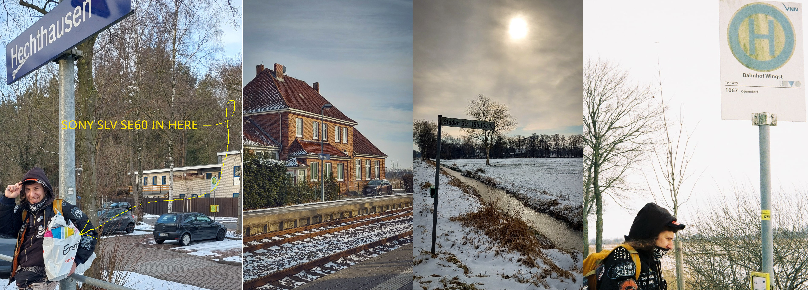
The VCR deck is a late 90s/early 2000s PAL device. The overall approach in the video domain remains the same as with the EV-S1000: FM RF capture via the CX card, decode with vhs-decode. Keep in mind that Video8 has the HiFi signal combined with Luma/Chroma. Therefore, only a single CX Card is required. On VHS this is not the case.
RF Tap
The SLV-SE60 exposes RF test points on a shielded connector behind the head drum marked in the datasheet with the ID CN262. The relevant signals are:| Pin | Signal | Description |
|---|---|---|
| 1 | PB RF | Video RF |
| 2 | RF SWP | Head switching signal |
| 3 | GND | Ground |
| 4 | CTL | Control track signal |
| 5 | AV ADJ | Head switch point adjustment pin |
Here is the view in the physical domain. I am tapping using a Dupond connector to BNC cable the PB RF on the PIN 1, and GND on the PIN 3:
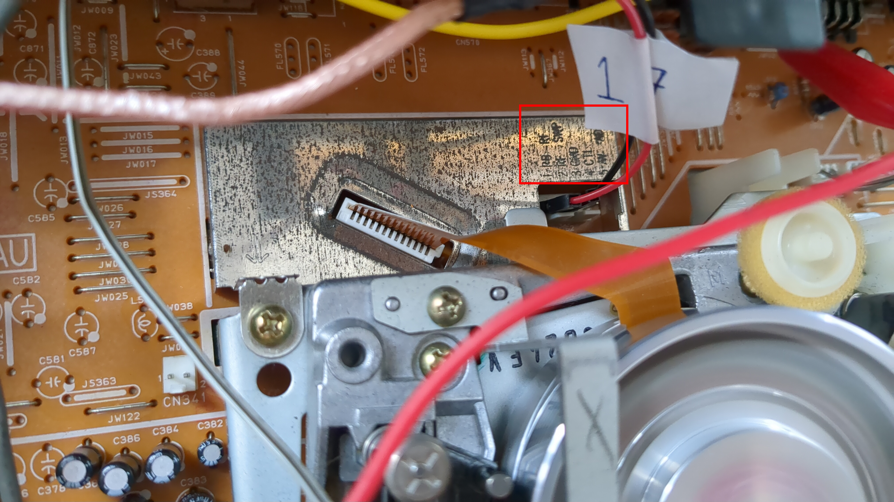
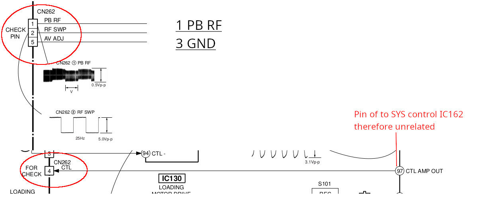
Source: Sony Corporation, SLV-SE35/SE50/SE60/SE70/SE80 Service Manual, 9-921-714-11, ©1999.
I tapped PB RF and AV ADJ using a DuPont female to BNC cable. The signal goes directly to the modified CX card.
CX Card
The same modified CX card from the Video8 workflow is reused here. The required hardware modifications are unchanged:
1. 40 MHz crystal mod for 40 MSPS 8-bit sampling
2. Cooling mod: heatsink and active fan (required at 40 MSPS to avoid thermal throttling and dropping frames)
3. BNC auf DuPont-Kabel for RF tap connection
4. C31 capacitor removal
5. RCA to BNC connector replacement
Calibration
Before capture the input level is calibrated using a ZSH script that wraps around the leveladj binary which is part of the CX driver by Chad Page https://github.com/happycube/cxadc-linux3/. My ZSH scripts for both VHS and Video8 capture are available on Github.
In brief: The script sets vmux, runs leveladj, reads the last tested level from its output, subtracts 1 to avoid clipping, and applies the result. With my setup the gain level was most of the times 31. This is the maximum gain level. I would often manually set it to 31 via:
sudo echo 31 | sudo tee /sys/class/cxadc/cxadc0/device/parameters/level
The calibrated vmux and level values are exported to the shell env. I would then create a ffplay preview of the raw ADC output follows calibration to confirm a valid RF signal is present before proceeding with a full capture. A visual reference can be obtained by the vhs-decode docs in the RF-Capture-Guide section.
source ~/scripts/rf/cx-calibrate.zsh
Capture
RF is captured losslessly to FLAC at 40 MSPS, 8-bit, single channel, unsigned little-endian. Capture duration is bounded by tape length passed as an argument:
zsh ~/scripts/vhs/capture-rf-vhs-flac.zsh CX_Card_40msps_8-bit 190
Decode
Video FM RF decoding is performed in the standarised way. The tape is PAL, sampled at 40 MSPS:
vhs-decode --debug --tape_format vhs --frequency 40 --system pal --ire0_adjust --recheck_phase --threads 4 CX_Card_40msps_8-bit.flac my-tape-decoded
Just for reference, the decoding on my computer Optiplex 9010/Intel(R) Core(TM) i7-3770 CPU @ 3.40GHz/16GB RAM takes approximately 12 hours for 180 minutes of a VHS tape.
I failed the HiFi RF capture
The vhs-decode tap list for the SLV-SE60 lists CN341 with PIN 1 as GND and PIN 2 as HF ADJ. Based on the service manual audio block diagram (section 3-4) and the Hi-Fi Switching Position Adjustment procedure (section 6, 2-4-2), this is reversed. PIN 1 of CN341 is HF ADJ and PIN 2 is GND.
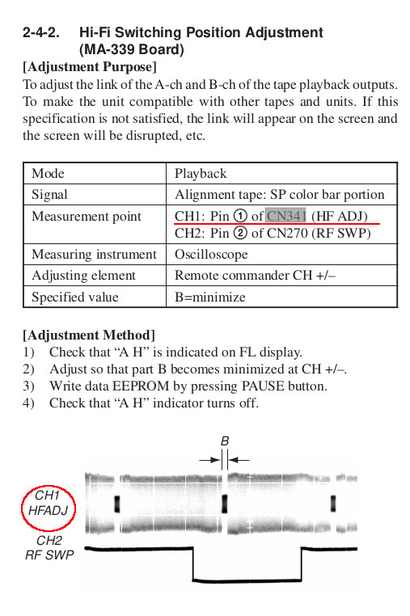
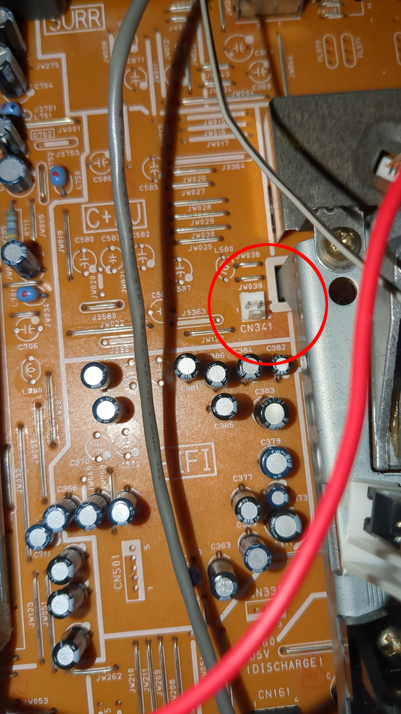
Source: Sony Corporation, SLV-SE35/SE50/SE60/SE70/SE80 Service Manual, 9-921-714-11, ©1999.
What CN341 actually is
CN341 is not a HiFi RF tap (under normal operation of TDA VCR AUDIO IC, check further down). It is a service calibration point on the MA-339 board used during the HiFi Switching Position Adjustment procedure.
The source of the signal at CN341 is IC360 which is the TDA9615H HiFi audio processor IC. It comes from PIN 36 of that chip, which is FMOUT in the TDA9615H datasheet. In my understanding, during normal playback mode (AFM bit = 0) FMOUT carries the HF envelope of the left channel FM carrier and not the FM raw carrier itself. This is posibly an envelope detector output used only for calibration. Possibly this is not something we can use to demodulating the actual FM signal.
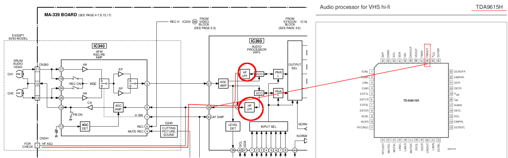
Source: Sony Corporation, SLV-SE35/SE50/SE60/SE70/SE80 Service Manual, 9-921-714-11, ©1999.
Source: Philips Semiconductors, TDA9615H Preliminary specification, 9397 750 01744, ©1997.
HF ADJ Spectrum
RF spectrum of HF ADJ on CN341. The spectrum does show FM carrier structure in the >1.0 && <2.0 MHz region expected for PAL VHS HiFi. There are two-three narrowband components are visible at approximately 6 MHz, 10 MHz, and 13 MHz that could be some kind of clock or switching. The signal is not suitable input for hifi-decode.
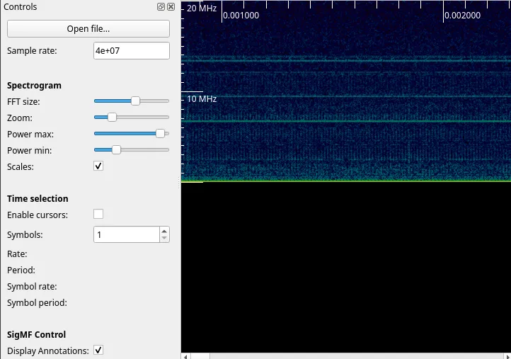
Trace between IC340 and IC360
The HiFi FM signal path in the SLV-SE60 runs from the drum audio heads through IC340 (AFM REC/PB AMP, LA7256) and then into IC360 (TDA9615H) at PIN 37. There is no accessible test point or component (such as resistor, capacitor) on this area between the two ICs after checking the full hardware schematic. The signal level at this point is expected to be low and the trace is buried on the MA-339 board with no convenient access point. That means lifting the full mechanical body of the VCR. Direct tapping here would additionally require physical modification a.k.a. scraping of the PCB traces with precision blade.
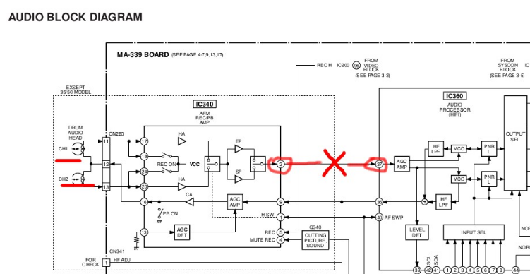
Source: Sony Corporation, SLV-SE35/SE50/SE60/SE70/SE80 Service Manual, 9-921-714-11, ©1999.
Theoretical path via I2C reprogramming
Credit to the N60TestMode8 project (the original approach) which documents their approach on a closely related Sony deck and served as the main reference for this investigation.
The TDA9615H similarly has a test mode accessible via I2C (accessed through IC162 SCL/SDA lines). In a similar way as with the "Sony VCR Test Mode 8 Mod" there could be possibly an option to program the TDA9615H through I2C to output the RAW FM carrier on FMOUT PIN 36/ accessible via HF ADJ/CN341.
The TDA9615H exposes special test modes via its I2C interface. This is controlled by the TEST bit in the power byte and selection bits in the select byte. We care about the tests 3 and 4. Test 3 routes the left channel band pass filter output to FMOUT in playback mode, and test 4 does the same for the right channel. These are the only playback mode test outputs available on FMOUT (PIN 36), which is the signal accessible at CN341. This means that with the correct I2C configuration CN341 would carry a single FM carrier channel per test mode. This would be left or right. NOT both simultaneously. Capturing both channels would require either switching test modes between captures or running the tape twice while capturing each channel.
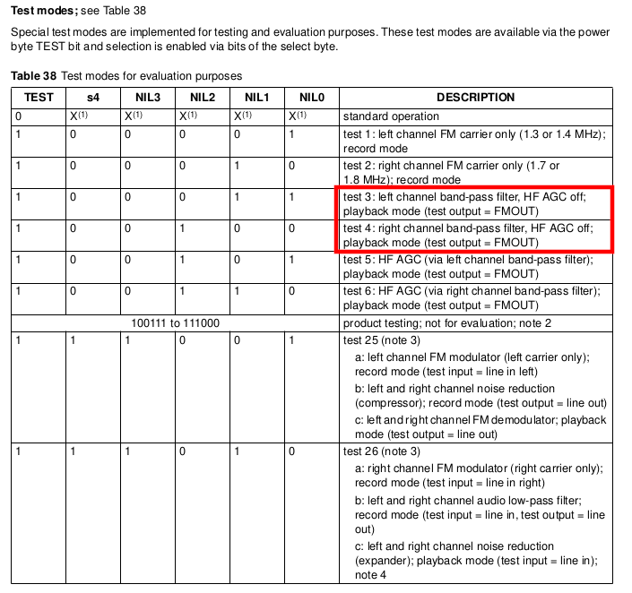
Source: Philips Semiconductors, TDA9615H Preliminary specification, 9397 750 01744, ©1997.
Refusing to go deeper
Going deeper in the HiFi RF capture on the SLV-SE60 via CN341 requires either PCB trace surgery between IC340 and IC360 and a high gain / low noise digital amplifier, or an I2C interception mod with risk of messing up the VCR permanently. Given that my tapes being archived are home recordings of questionable quality, the archival benefit of HiFi RF over a clean analog capture does not justify the hardware risk and effort at all. So the decision was made to move to analog audio capture via the SCART/CN500 output of the deck.
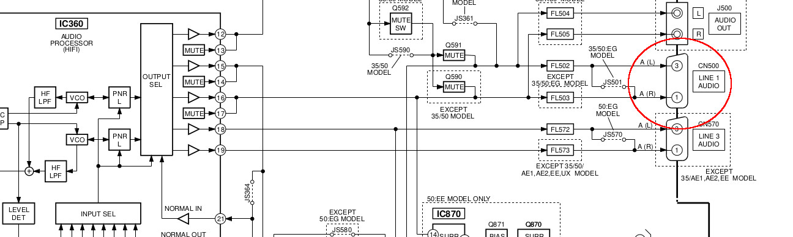
Source: Sony Corporation, SLV-SE35/SE50/SE60/SE70/SE80 Service Manual, 9-921-714-11, ©1999.
Method for analogue audio tapping
Crocodile clips were attached to the L and R CN500 LINE OUT pins. The GND taken from the VCR chassis shielding. The three lines were terminated into a 3.5mm minijack and fed into the line input of an Edirol UA-5 USB audio interface. Gain is set manually on the unit before capture.
The UA-5 card index is detected at runtime via arecord -l. Audio is captured as 16-bit signed PCM at 48 kHz mono and duplicated to stereo via SoX remix. RF video and analog audio run as parallel background processes in the same script each bounded by the same tape-length timeout. This is given as argument during execution. The two streams are asynchronous. Taking into account that I am using https://github.com/oyvindln/vhs-decode/wiki/Auto-Audio-Align, I never faced any noticable timing/sync issues.
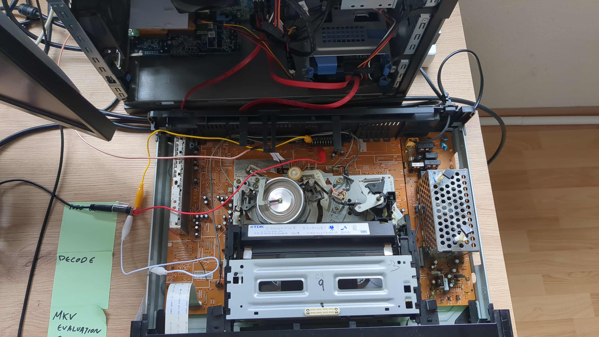
Not that bad results
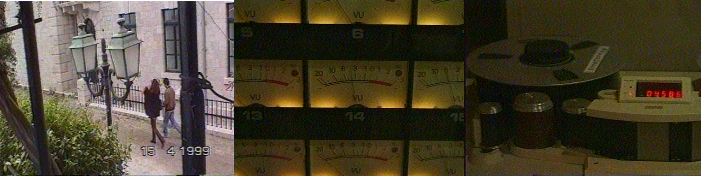
References
Sony Corporation, SLV-SE35/SE50/SE60/SE70/SE80/SX60/SX70/SX80 Service Manual, 9-921-714-11, Home A&V Products Company, ©1999.
Philips Semiconductors, TDA9615H — Audio processor for VHS hi-fi, Preliminary specification, document order no. 9397 750 01744, 1997 Jun 16.
SONY EV-1000S Using MOLYKOTE EM-30L industrial to re-grease stuck take-up/eject tape mechanical arms
Date: 2026-01-20
Molykote EM-30L Hochleistungs-Fett 50ml in Dosiertube:
- https://heroms.com/10005-molykote-em-30l-hochleistungs-fett-50ml-in-dosiertube
- https://www.amazon.de/Molykote-Hochleistungs-Schmierfett-Kunststoffschmierung-Kunststoffgetriebe-Wartungsfett/dp/B07NPNPS85
- SICHERHEITSDATENBLATT: https://docs.heroms.services/EM30L-SICHERHEITS-DATENBLATT-MOLYKOTE_de.pdf
- SAFETY DATA SHEET: https://docs.heroms.services/EM30L-SAFTEY-DATASHEET-MOLYKOTE-EM30L_en.pdf
High-Rate 40 MSPS FM RF capture of video8 using CX2388x-based expansion PCIe card
Date: 2025-12-20
If the readers remember my previous blog post where I was using a CX for capturing RAW baseband CVBS signal for video8 cassette archival, then please forget about it. I have eventually moved away from this method and I am now capturing directly the RF signal from a tapped Sony EV-S1000 player. I thought writing a post as my now optimised workflow is finalised.
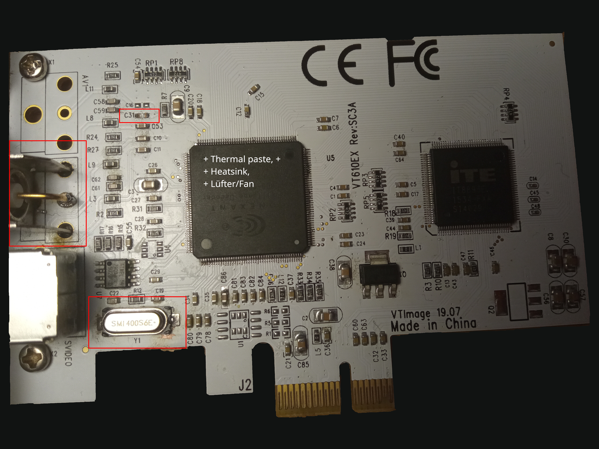
Why moving away from CVBS hacky capture
The initial workflow was based on raw baseband CVBS capture using the CX card. Video was captured as raw .u8 through cxadc. The mono audio was taken asynchronously from the camcorder RCA output using an Edirol UA-5 and some ALSA scripts. Both streams were recorded asynchronously and later aligned manually. This workflow was producing digital video files of questionable but yet "watchable" quality. However alignment was very time demanding, as frames were often dropped. Pretty much this is a somewhat hacky way to produce a picture over nothing given the HW limitations at the time.
Having spoken with Harry Munday via email communication I learned the following:
CX cards are not really suitable for production grade raw CVBS capture. The CX2388x chips will drop fields or frames when handling baseband CVBS. This is the case especially once the internal decoder path is engaged. In general this method is not considered of good quality for archival.
Video8 uses colour-under recording and not composite modulation. With CVBS the camcorder has already combined and processed internally the luminance and chroma internally. This prevents from performing the separation during decode resulting in lower decoding precision.
CVBS capture also carries a higher effective bandwidth because it is a processed baseband signal rather than the original FM RF. This makes compression less efficient and increases space on the drive with no benefit.
In CVBS capture HiFi FM audio carriers are lost entirely which means audio and video no longer share a common clock reference.
Overall, for video8/8mm format the correct approach is FM RF capture path. Video RF and HiFi RF are sampled from the same clock source and stored together. This allows clock-based audio alignment during post processing.
HW
I was often checking Kleinanzeigen for an EV-S1000 or another video8 deck with accessible RF test points. I eventually found and ordered a Sony EV-S1000 for approx 350 EUR from a seller in Western Germany. The device arrived in one piece ;)
The following hardware components and CX card modifications were required for the FM RF capture. Detailed instructions for each modification already exist in the official vhs-decode documentation. For this reason it makes no sense to try explaining again here. I only reference the relevant documentation pages and one video by Harry Munday that covers the crystal and BNC modifications.
1. 40 MHz crystal mod for 40 MSPS 8-bit sampling
2. Cooling mod: heatsink and active fan (required at 40 MSPS to avoid thermal throttling and dropping frames)
3. BNC auf DuPont-Kabel for RF tap connection
4. C31 capacitor removal
5. RCA to BNC connector replacement
6. Sony EV-S1000 or another Video8/Hi8 deck with accessible RF test points
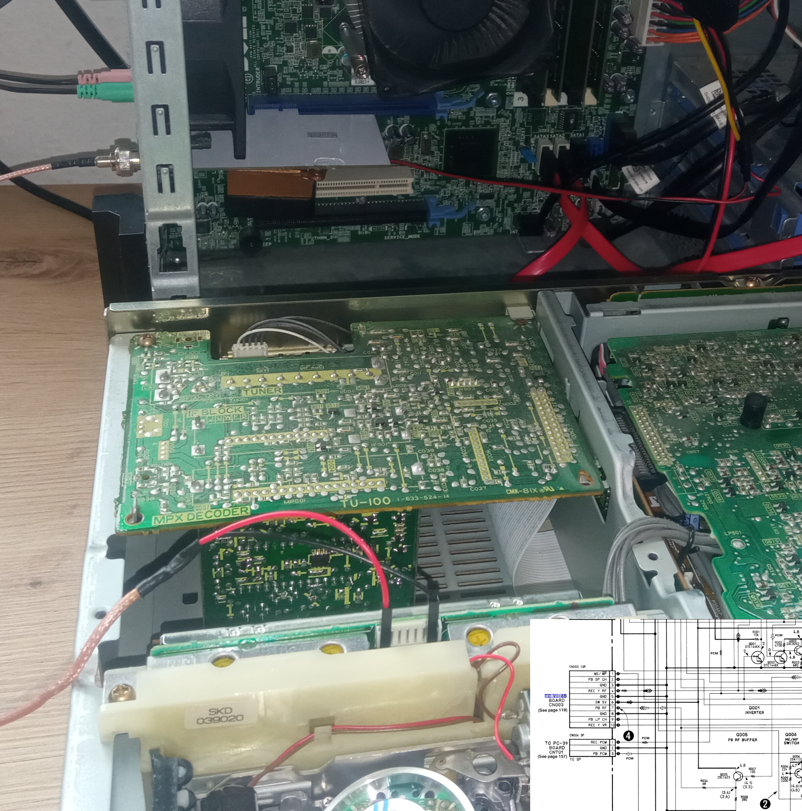
For cooling the connexant chip on the card, given that I am now sampling at 40 MSPS I avoided using a USB power source and a 5V DC fan. My Dell Optiplex T1650/MT9010 does not expose internal USB headers neither 12V fan headers other than the CPUFAN header which is of course unavailable. The fan was therefore powered from a 12V Molex line. I have prepared this line to be used only for non critical peripherals such as fans or powering up optical drives. In general, devices where electrical noise will not be an issue.
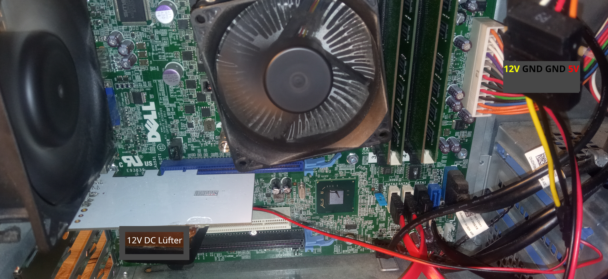
SW
Calibration
Playback calibration is performed before RF capture. The video8 playback device must provide a correctly centred RF signal to the ADC on the CX Card. If there is RF mis-centring, tracking error or unstable clock then this is permanently baked into the RF capture. Therefore, it cannot be corrected in software later :(
FLAC Capture
The RF signal is captured losslessly into a FLAC container. The capture writes the raw samples at a fixed sample rate (40 MSPS) and 8-bit depth on a storage drive. FLAC file is the master copy and represents the RF signal from tape.
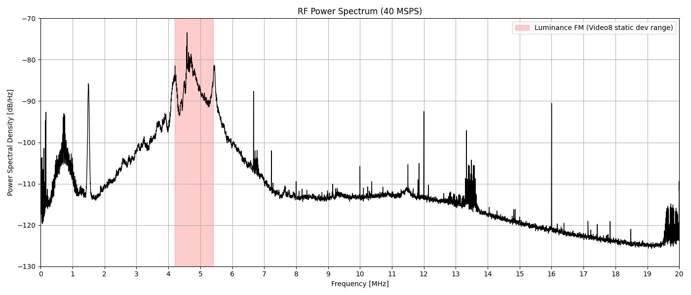
This region represents the video signal in RF form prior to demodulation. The highlighted band corresponds to the video8 luminance FM signal. For video8 I could find that the luminance carrier occupies approximately the 4.2–5.4 MHz region as defined by the nominal carrier and its static frequency deviation. The wide centred spectral bell-like curve reflects the FM modulation used to encode luminance amplitude. It shows some sidebands. I suspect that the HiFi signal to be the other bell-like curve below video at around 1.5 MHz. On the vertical axis the Power Spectral Density in dB/Hz was computed from normalised digital samples. The reference is effectively full-scale (FS) of the ADC after conversion to float. The plot shows power per 1 Hz bandwidth.
Decoding
Video8 FM RF decoding is performed using vhs-decode. The tool demodulates luminance and chrominance, applies time base correction, dropout correction, and phase correction. Finally it produces a .tbc a chroma.tbc file and a JSON metadata file. The processing later operates on this TBC output.
HiFi / Audio decoding & Alignment
HiFi FM audio is decoded from the same RF capture using hifi-decode. The decoder runs until external termination where forces the executable to return. The resulting 48 kHz FLAC audio is then aligned via a vhs-decode-auto-audio-align and mono project tool pipeline. This pipeline requires the video timeline based on the TBC JSON metadata. Alignment compensates audio channel for dropped fields and timing offsets introduced during video decode.
Export
Final export is performed by tbc-video-export. The tool combines decoded video from the TBC file with the aligned audio track and encodes the result using a defined FFmpeg profile. I am using default codec FFV1 in MATROSKA container.
Scripts
The RF capture and decoding workflow is fully scripted for ZSH. The scripts cover RF capture video decode, HiFi audio decode, alignment, and final export. They are published in a GitHub repository for personal use and archival purposes. Paths, device names are specific to my system and therefore must be adapted before reusing.
Repository: https://github.com/JasonSKK/rf-capture-cx23880-scripts-zsh
- CX card auto level calibration (relies on leveladj bin)
- FLAC RF capture
- vhs-decode video + hifi + vhs-decode-auto-audio-align + tbc-video-export FFV1 encoder, MATROSKA container
. cx-calibrate.zsh
capture-rf-flac.zsh /path/to/capture-40msps-8bit-cx-card.flac
. decode-rf.zsh /path/to/capture-40msps-8bit-cx-card.flac /path/to/capture-40msps-8bit-cx-card
Results
Visual quality comparison
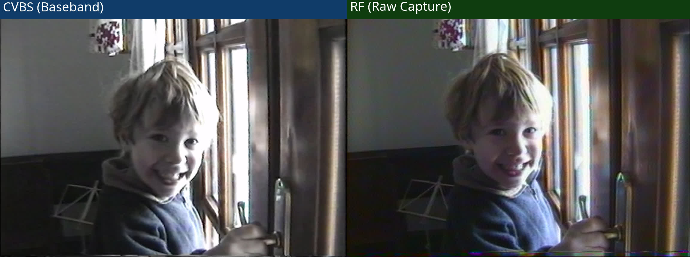
Advantages of the new workflow
- Simpler signal path RF captured once. All decoding in software. No dependency on more than one playback device such as blending CX for video and sound card for audio.
- Unattended processing The decoding pipeline is scriptable. I am planning to automate decoding of all of my home tapes while being away for Christmas holiday.
- Automatic audio alignment Alignment driven by TBC JSON metadata. Seconds per tape. Previously was done manually always with some perceivable drift due to crystal upgrade as chip was running hot at 40 MHz.
- Dropout sync Frame drops do not affect A/V sync. Time-base corrections maintained.
CX2388x PCIe Stability Issues During Early Boot on Intel Q77 Systems, libreboot
A repeatable hardware level failure was discovered with the CX2388x-based capture card on Intel Q77 platform (Dell OptiPlex 9010 MT / Precision T1650 class systems). The issue causes repeatable POST failures or hard system locks during early boot. This is independent of kernel, or firmware (observed with both vendor BIOS and libreboot/coreboot). Root cause was discovered to be faulty 40 MHz generic crystal resonators used for the CX card mod. Potentially faulty crystals caused the PCIe card to destabilise the PCIe-to-PCI bridge during initialisation. This could potentially prevent reliable enumeration during early boot cycle (?) Reverting to the original crystal restored the ability of the system to boot. More than 5 crystals from the same batch reproduced the fault. This confirms a hardware issue that can possibly be resolved by utilising original ABRACON crystals. Alternatively it might be required to change multiple crystals when ordering the generic pieces from AliExpress.
How I librebooted my DELL OPTIPLEX 9010MT (internal flash via flashprog)
Date: 2025-11-22
DISCLAIMER
This blog post describes exactly what was done on one specific machine. Complete information for supported devices is in the official Libreboot documentation. Always follow the upstream guides. This report is not a replacement.
WARNING 1
As mentioned in the official documentation, make sure a HW programmer and the SOP8 and SOP16 adaptors are available in case the device is bricked so that you can recover using external flashing
WARNING 2
Make sure you know what you are doing. If in doubt go through the OFFICIAL DOCUMENTATION.
Hardware
Model: Dell Optiplex 9010 MT
Firmware target: Uses the T1650 firmware in Libreboot
References:
https://libreboot.org/docs/install/dell7010.html
https://libreboot.org/docs/install/t1650.html
Create firmware dump of the stock DELL BIOS
- Set the motherboard jumper to SERVICE_MODE in order to deactivate flash protection
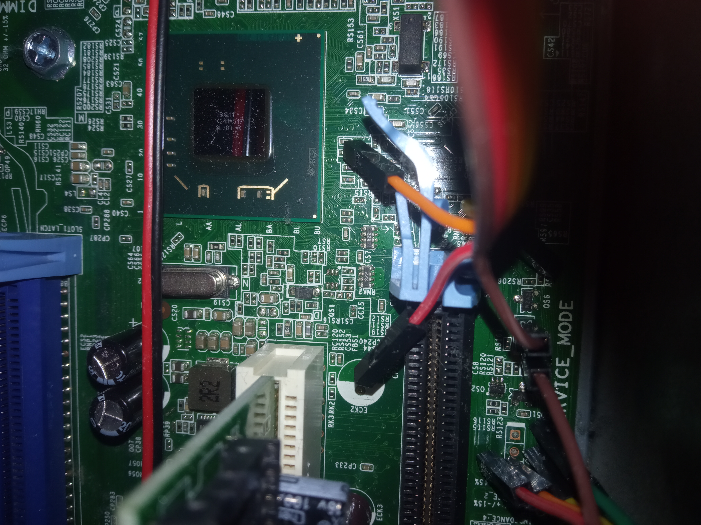
- Boot the machine
- At the Dell prompt press F1 to continue
-
Create multiple dumps using flashprog:
sudo flashprog -p internal:laptop=force_I_want_a_brick,boardmismatch=force -r dump.bin - Create several dumps and verify identical checksums. Checksums must match.
sha1sum dump* - Copy the dumps on a machine which you can operate a IC programmer to externally flash the binary back to the target host in case it is bricked
Build Libreboot from source
Libreboot handles vendor firmware extraction automatically when building from source.
- Enable 4 thread execution:
export XBMK_THREADS=4 -
git clone https://codeberg.org/libreboot/lbmk
cd lbmk
sudo ./mk dependencies debian
# Build time approx. 10 minutes (Intel(R) Core(TM) i7-3770 CPU @ 3.40GHz / 16GB RAM / 4 threads) ./mk -b coreboot t1650_12mb
Set MAC address (Intel GbE region)
MAC address must be set before flashing
- Create a tar archive of the produced image:
tar cfJ libreboot-RELEASE_t1650_12mb.tar.xz bin/t1650_12mb/seabios_t1650_12mb_libgfxinit_txtmode.rom - Inject randomised MAC address
./mk inject libreboot-RELEASE_t1650_12mb.tar.xz setmac 00:xx:xx:xx:xx:xx - Extract (overwrite) modified archive back to
bin/t1650_12mb/seabios_t1650_12mb_libgfxinit_txtmode.rom
tar xvf libreboot-RELEASE_t1650_12mb.tar.xz
Flash ROM
Double check the ROM file path before flashing!
Flash ROM via flashprog:
sudo flashprog -p internal:laptop=force_I_want_a_brick,boardmismatch=force -w bin/t1650_12mb/seabios_t1650_12mb_libgfxinit_txtmode.rom
After flashing, power off, remove the service jumper, and boot. Libreboot should be active.
GRUB menu on boot:
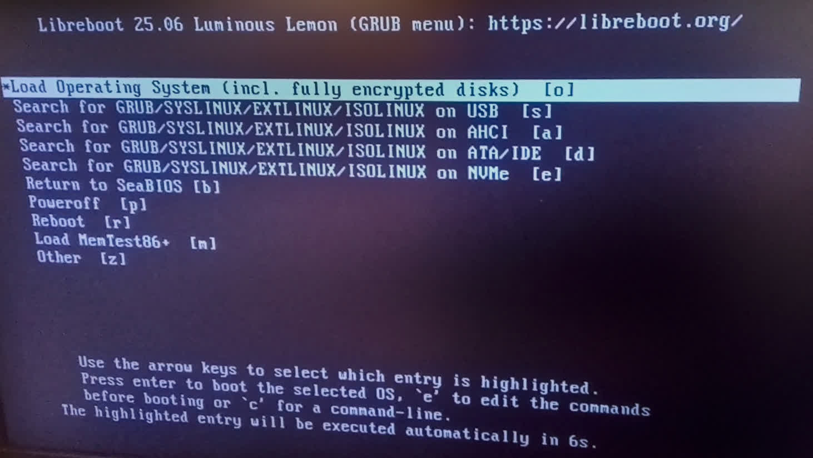
FFC retracing on ACER ASPIRE 5532 keyboard using silver conductive paste
Date: 2025-10-20
Backstory
My first personal computer was an Acer Aspire 5532 with an AMD Athlon 64 TF-20 at 1.6 GHz and 3 GB RAM. It still runs well today as a native Linux machine mainly used for tasks such as reading or writing ICs using a universal programmer where moving my desktop pc is not possible, Linux experiments, and general work where a desktop PC would be less practical (coding on the sofa). Over the years this laptop has had a few HW issues. I have already resoldered USB ports, audio, and the WIFI card. This time the keyboard died. Considering the machine is over 15 years old and seriously beaten .. there is no surprise some components eventually die. I like the ease of disassembly and repairability of the laptop. Within 5 minutes you can get into the motherboard so easily.
The keyboard uses a FFC cable that connects it to the mainboard. Over time repeated bending caused several internal trace breaks making a few keys unusable. A new keyboard costs around 20 EUR online. Nonetheless I went ahead repairing it as a learning exercise. I thought of it being a good opportunity to gain some practical experience on retracing as I have not done this previously.
Retracing method
Below is a photo of the damaged area under the FFC cable’s protective layer. The cyan coloured triangle marks the general affected area. The red triangle highlights the worst damage. Using a few drops of denaturated ethanol (99%) on a cotton bud, I started wiping gently along the direction of the traces. Using a precision blade (my new favorite tool) I carefully scraped off any residue that remained after ethanol on trace path to avoid any shorts later on.
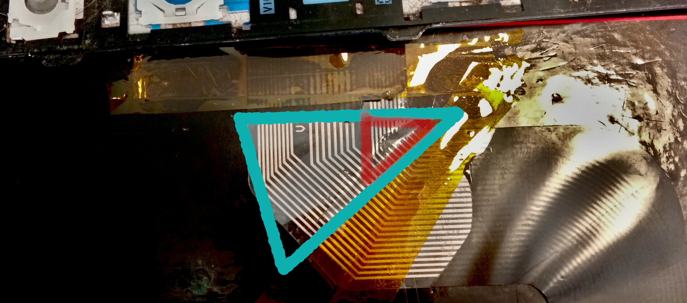
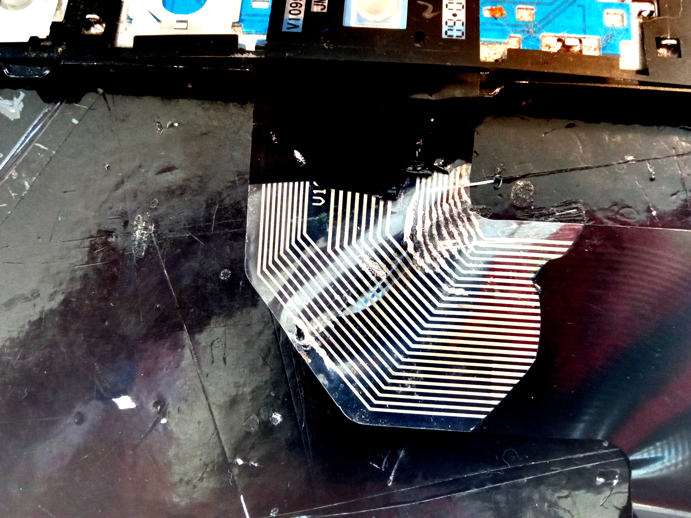
I taped the FFC cable down even more to keep it steady. Then I used some silver conductive paste within a tiny syringe needle. I applied small amounts across the gaps to reconnect the worn and broken traces. Silver conductive paste allowed me to pretty much "draw" over the break joint in the path restoring the missing conductor. Traces are uneven in between the cable. Measuring from pin-out/edge area. Nominal pitch ≈ 1 mm. Measured center to center pitch:With W = cable width in millimetres, and N = number of conductors (count). Pitch ≈ 1.08 mm (nominal 1.00 mm).
I left the silver conductive paste dry for about an hour (a blow dryer can speed this up)... Then I connected the keyboard and tested. Some keys were still unresponsive and I needed to repeat the process 2 more times. Scraping off and reapplying the paste. Finally, I managed to get the keyboard to a full working state. Proof:
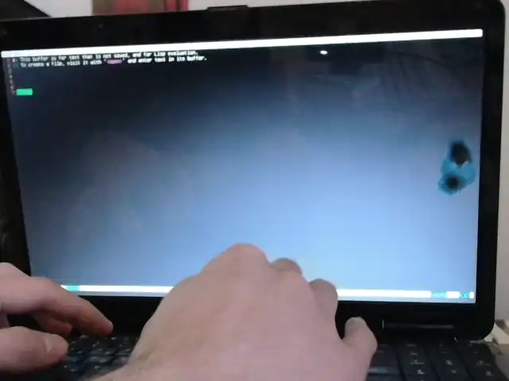
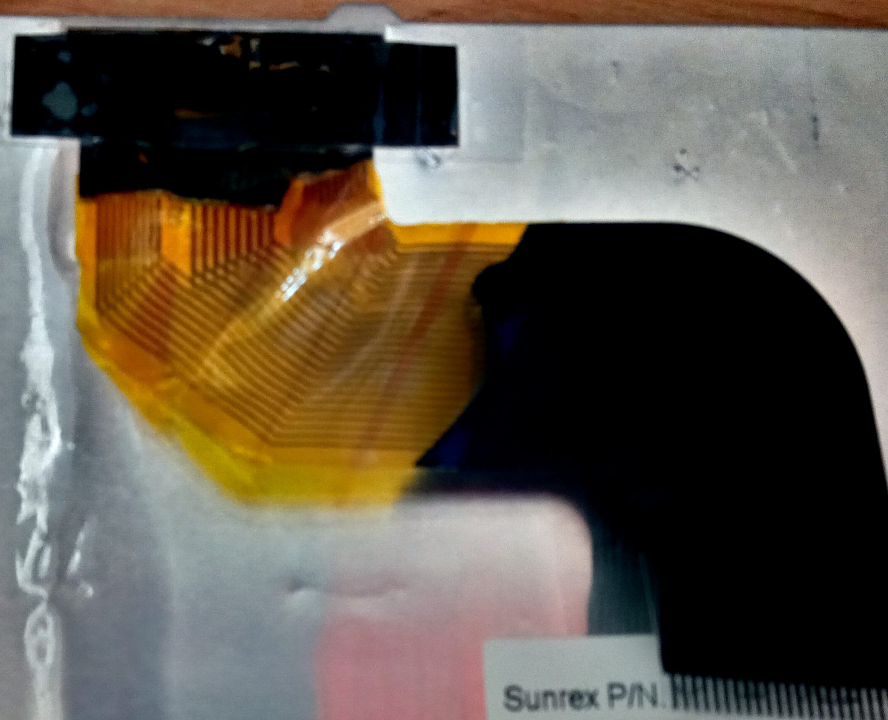
After a few attempts I learned that the most reliable way to retrace extremely fine joints (traces are spread unevenly) is to draw freehand under good lighting. I initially tried using tape or paper as a guide. In contrast this made the process messier. The paste was smudged and in one case tape lifted other non-damaged traces. In the end a steady hand and slow controlled syringe movement worked best. I aligned the needle carefully with each trace and paused to push more paste when needed. I applied some non-conductive tape to prevent silver paste being scraped off and further protect the remaining traces from future use.
Conclusion
To close, this is probably too much hassle as I could just have bought new keyboard. Realistically no one wants to suffer retracing 1 mm lines but:
- I saved the keyboard from the landfill and 20 EUR from my wallet.
- I learned how to retrace FFCs using silver conductive paste
Removing NAND flash without a heat gun for raw chip-off dumping
Date: 2025-10-03
Sadly back in 2017 a USB flash I own was plugged to a Frankenstein ACER laptop with reversed VCC and GND on the pinout of the usb adaptor on the motherboard. Naturally the IC was fried for good. As NAND cells degrade over time and data retention decreases without power the ideal time to attempt obtaining any meaningful data from the chip would have been ASAP. Essentially yesterday :D
Spex
| Vendor/USBFlash | IC/Controller | NAND chip | ID |
| Kingston DataTraveller 100 64GB (fake) USB2.0 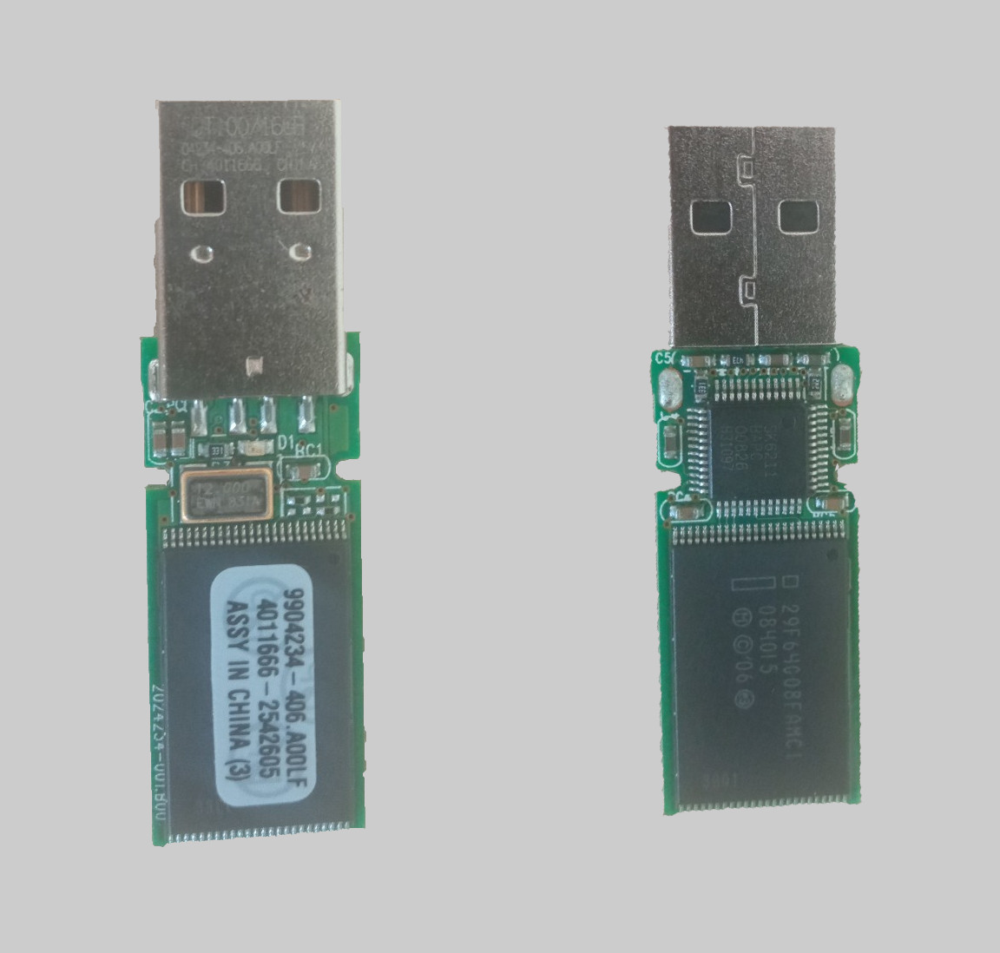 |
Skymedi Corporation, Enhanced UFD2.0 Controller, SK6211 BAPC 00828 H31097, 48-pin | Micron Technology, 29F64G08FAMCI | 0x89D7D53E |
Making sure chip-off method is really required
First of all I need to make sure that chip-off method is absolutely necessary and the controller has 0 change being brought back to life. I do not want to casually start removing NAND chips attempting raw extraction without proper reason.
- Monitor kernel buffer for any activity and plug usb flash in the usb port. I did not use the usb port of the motherboard but an externally powered usb hub ;)
dmesg -w - Nothing is visually fried from the passives on the PCB
- Multimeter tests
- Prepare a ROM with flashable images (either stock or custom with required BSP).
- Clone and install
mtkclient:git clone https://github.com/bkerler/mtkclient.git - Start the GUI:
python mtk_gui.py - Power off the phone by pressing and holding Volume Up + Volume Down + Power.
-
As soon as the screen turns off immediately connect the USB cable between the android device and a linux computer while keeping all three buttons pressed. The mtk_gui tool should eventually display the partition list after a while:
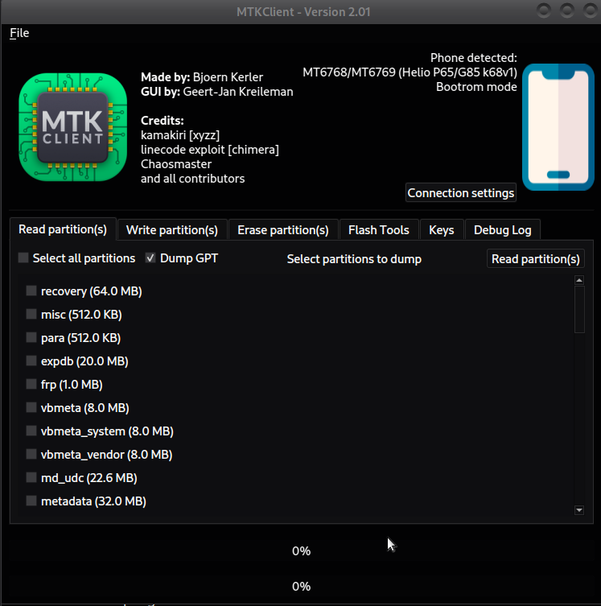
- If BROM mode is blocked use bypass_utility. Follow the README.
- In the "Read partition(s)" tab create a full backup of your partitions.
-
In "Write partition(s)" tab choose "Select from directory" and point to the ROM image folder.
-
If flashing a custom ROM that requires a specific BSP first select and flash the matching stock ROM. For example LineageOS 20 requires Android 11 BSP. I use
lancelot_eea_global_images_V12.5.5.0.RJCEUXM_20220414.0000.00_11.0_eea. -
Without rebooting or flashing select "Select from directory" again and load the custom ROM directory. This ensures missing partitions will be filled from the stock ROM while custom boot, system, recovery etc. images are used:
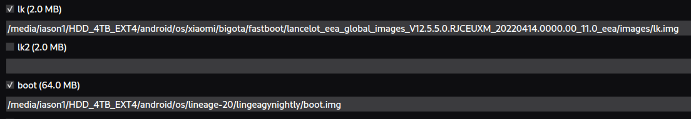
-
If flashing a custom ROM that requires a specific BSP first select and flash the matching stock ROM. For example LineageOS 20 requires Android 11 BSP. I use
- Locate the original IMEI:
- Option A: Printed on the original packaging box.
- Option B: Open the device. The Redmi 9 is very easy to disassemble.
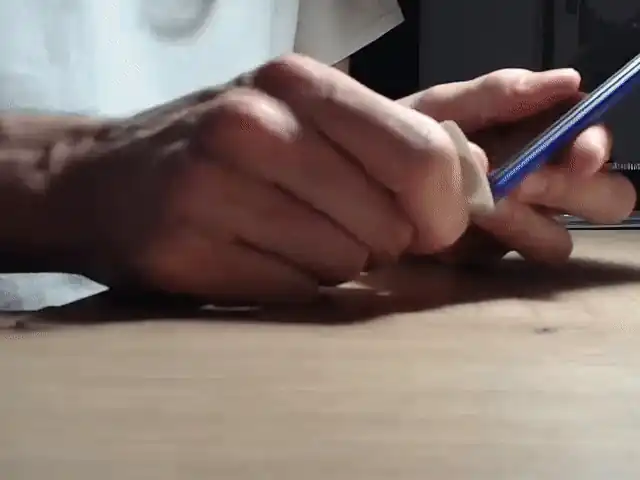
- Look for a sticker near the camera module with the original IMEI numbers.
-
Create a mtk_imei config file for
mtk_imei:
- IMEI1: Set to original IMEI
- IMEI2: Set to
000000000000000orIMEI1 + 1
- Executing the script will produce a zip archive
-
Magisk required. Either patch the boot image via Magisk Manager or flash already patched boot partition manually if you have from previously. Then:
- Option A. Add the generated zip archive as a Magisk module
- Option B. Alternatively flash the zip via recovery using
adb sideload
- Official Stock ROM repo
- mtkclient
- mtk_imei
- MTK Bypass Utility
- LineageOS no longer provides official builds for lancelot. I have built it myself using the official guide. Contact me if you need a prebuilt.
- Build LineageOS for Xiaomi Redmi 9
- If my PR in the mtk_imei is not yet merged at the time you attempt this, you may use 'earth' as device name in the configuration file. It works for lancelot too.
- If you plan to flash stock ROM consider using a custom recovery to simplify the sideloading process. Otherwise, tools like MiAssistant add unnecessary complexity for no real benefit.
- Personal advice: Avoid using random closed source b******t Windows tools claiming IMEI restoration. Most are unreliable and shady.
- Κάτοικοι Εξωτερικού - αίτηση μεταβολής φορολογικής κατοικίας. Deadline: 10/03/2025 για φορολογικό έτος 2024.
- Κάτοικοι Εξωτερικού - κατάθεση δικαιολογητικών για την μεταβολή φορολογικής κατοικίας. Deadline: 10/09/2025 για φορολογικό έτος 2024.
- Τα πεδία με διακεκομμένη γραμμή στα έντυπα Μ0, Μ1, Μ7 είναι για την υπηρεσία. Δεν τα συμπληρώνεις.
- Όλα τα έντυπα Μ έχουν οδηγίες στην τελευταία σελίδα. Διάβασέ τες.
- Τα κεφαλαία καταργούν την ανάγκη για τόνους = πιο γρήγορη πληκτρολόγηση;
- Μπορεί να είναι μια μορφή “διοικητικής επισημότητας”;
- ΑΠΛΩΣ ΣΟΥ ΦΩΝΑΖΟΥΝ ;;;
- The number must have a GR prefix (+30). Mobile or landline I do not care.
- Maximum cost: 7€/month
- Minimum 100 minutes/ month (50 to mobile, 50 to landline)
- People in GR must be able to call me at local rates
- Supports some type of encryption (TLS/SRTP)
- Non dodgy services
- Your device can support VoIP
- A GR address under your name + a document that can prove it
- A valid ID or passport
- A non-GR mobile number (for call FWDing)
-
Create an account at
zadarma.com.
Use your non-GR mobile number for registration and select the "Standard" pricing plan. Fill in your GR address.
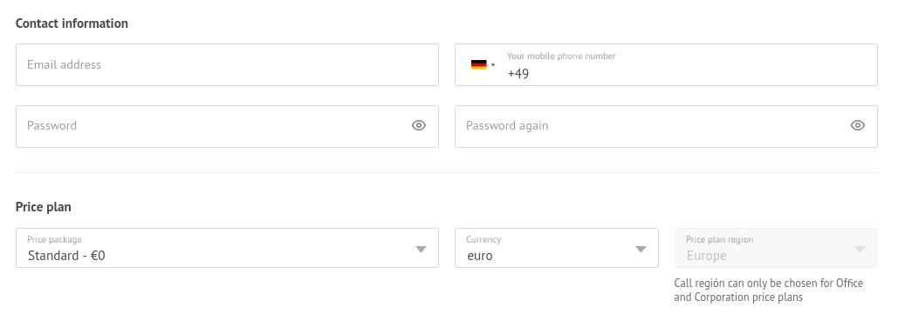
- Order a GR virtual landline number. You can select area codes such as 210 (Athens), 2310 (Thessaloniki), etc. Mobile numbers are not available. An identification process is then required. Ideally provide a GR ID/passport. As you have used foreign number for registration (I used my DE number) you may be asked to explain... I submitted a "Tax Residence Certificate" issued by AADE: link. I hid my SSN on the PDF. Be mindful that if you have already completed the process of "ΜΕΤΑΦΟΡΑ ΦΟΡΟΛΟΓΙΚΗΣ ΚΑΤΟΙΚΙΑΣ ΣΤΟ ΕΞΩΤΕΡΙΚΟ" this probably won’t work as the foreign address will be registered into the system. In this case, provide another document as proof. For me at the time this process was not fully concluded therefore my GR address was still visible.
- Pay for a full year: 36€ (3€/month).
- Install a SIP client: Setup guide
-
Enable call FWDing in the APK or web client. Make sure that the SIP APK can run as a background process. If no network is available calls then the virtual number cannot receive calls.
Settings: Zadarma APK --> Accounts --> SIP --> Call Forwarding --> Fill in foreign mobile number. Set caller ID as your virtual GR number.
| Measurement points, passives | Value | Comments |
| VCC > GND, Resistance mode | 0Ω | Hard short |
| GND > D+ / D-, Voltage | 6 mV | NOK. Very low leakage |
| VCC > D+ / D-, Voltage | 0 V | NOK. IC not driving. Could indicate dead controller |
| GND > NAND VCC, Resistance mode | 0Ω | NOK. Short. Confirms damaged power rail. This is likely via controller or internal short in NAND |
| VCC > NAND CE# (chip enable pin:9), Resistance mode | ∞ | OK. Open line, this is normal if IC not active |
| D+ > D−, Resistance mode | ~20MΩ | OK I think. USB differential pair open |
| VCC > XTAL (12 MHz), Voltage mode | 0 V | NOK. IC not oscillating |
| USB VBUS > GND (off board) | 5.08 V | OK. Host port. Power reaches device input. |
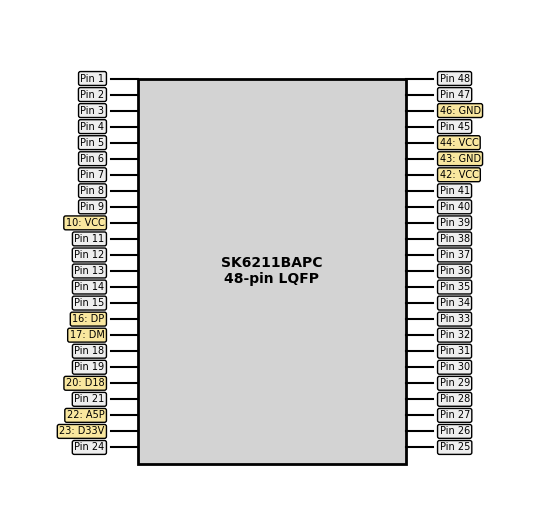
| Measurement points, IC | Value | Comments |
| Pin 10 (VCC) > GND, Resistance mode | ~0.9 MΩ | OK. Main digital supply pin shows expected relatively high impedance |
| Pin 42 (VCC) > GND, Resistance mode | ~0.9 MΩ | OK. Secondary digital supply pin |
| Pin 44 (VCC) > GND, Resistance mode | ~0.9 MΩ | OK. Third digital supply pin |
| Pin 43 (GND) | — | Reference ground |
| Pin 46 (GND) | — | Reference ground |
| Pin 16 (DP), Diode mode > GND | 0.5 V | OK. USB D+ diode drop consistent with internal ESD protection |
| Pin 17 (DM), Diode mode > GND | 0.5 V | OK. USB D- diode drop consistent with internal ESD protection |
| Pin 22 (A5P) > GND, Resistance mode | ~0.9 MΩ | OK I guess. VBUS input resistance |
| Pin 23 (D33V) > GND, Resistance mode | ~0.9 MΩ | OK. 3.3 V regulated output high resistance suggests no short |
| Pin 20 (D18) > GND, Resistance mode | Not measured | 1.8 V regulated output |
Results
All VCC pins read normal to GND. That is a good sign and means there is probably no hard short. DP/DM show ~0.5 V in diode mode. Means ESD protection diodes inside the IC are intact. A5P and D33V measure ~0.9 MΩ to GND. Resistance check shows no short.
Conclusion
IC does not look fully dead from the measurement tests. However, even if the IC is not internally damaged the firmware might. No detection/activity on the computer possible whatsoever. At this stage, I have no idea how to un-fry the IC. Therefore I will be now proceeding with chip off method in order to dump the raw NAND using a universal programmer and a TSOP48 adaptor.
Micron NAND flash memory removal
Usually NAND flash chips are removed using a hot air gun. In my case no heat gun was available. One common alternative approach is to flood the pins with solder and heat one side at a time while at the same time poking the NAND with a pair of tweezers. This is easier with leaded solder which has a lower melting point but I do not use leaded solder.
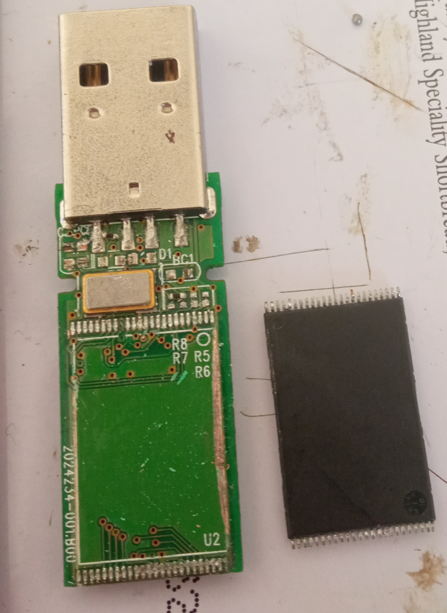
I used a precision razor blade pen in combination with a soldering iron. Carefully I started scraping the edges of the NAND chip (not the pins but the sides). Once the blade edge could go under the NAND I proceeded slowly and gradually to the pin sides. On the edge I heated the pins with the soldering iron to melt the tin while lightly and carefully lifting the pins from underneath with the blade. I first released one side of the chip working on 12 pins at a time which is half the side. Then the opposite side. This was done to avoid going too deep with the pen's body putting additional stress on the NAND chip. In the GIF below I have only managed to get the very final part where I detach the very few last pins. I did not manage to get the scraping on the sides and the heated pin lifting using soldering iron and blade :'(

After both sides were freed I repeat the process on the remaining two sides to fully detach the NAND chip from the PCB. Finally I used my soldering iron, some flux, and soldering wick to remove excess solder that might have been trapped in-between pins.

This was my first attempt using this method.
During removal one pin was lost. Fortunately it was an NC (no connect) pin and did not affect functionality.
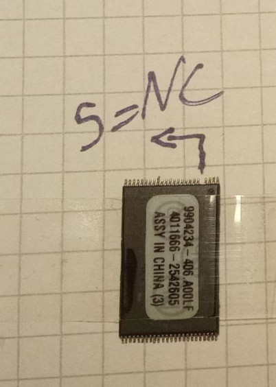
To be continued ... I have put an order for an universal programmer and a TSOP48 adaptor and I am waiting for them to arrive ;)
Unbrick & Restore IMEI for Xiaomi Redmi 9 (lancelot, MT6768 Helio G85)
Date: 2025-07-28
Unbricking
This is relevant for when recovery and fastboot are inaccessible and phone is stuck in a bootloop. In such cases BROM/preloader mode needs to be accessed. This is acessible in all devices with a Mediatek chipset.
Before attempting anything there have been reported cases where letting the battery discharge fully has resolved the bootloop. If this does not help, proceed with flashing the partitions as disk images manually via BROM mode. This is done at your own risk. I am not responsible for unrecoverably bricked devices :)
At this stage, BSP firmware version compatibility is irrelevant because full partitions will be flashed. Nonetheless, make absolutely sure you are using images for the correct device model.
Flash ROM
Note: This has been tested only on Debian GNU/Linux 12 (bookworm), 6.1.0-34-amd64IMEI Restoration
If you have corrupted or lost somehow nvdata.img without backup the device may show IMEI null and be unable to register on mobile networks --> no calls possible. Confirm this by dialing *#06# in the phone app.
Use mtk_imei to restore IMEI. Steps:
Immediately your IMEI should be restored, if not try rebooting.
Happy hacking!
Resources & Tips
Μεταφορά φορολογικής κατοικίας στο εξωτερικό ASAP και με ελαχιστοποίηση κόστους, χρόνου, και ταλαίπας
Date: 2025-06-09
Status: Από συνομιλίες με γνωστούς κατάλαβα ότι κάθε ΔΟΥ εφαρμόζει διαφορετικά κριτήρια. Οπότε το επίσημο έγγραφο ΠΟΛ. 1201/2017 πάει άπατο.
Aim: Το άρθρο αυτό περιλαμβάνει tips & tricks βασισμένα στην προσωπική μου εμπειρία μεταφοράς φορολογικής κατοικίας από Ελλάδα στη Γερμανία. Τουτέστιν δεν είμαι φοροτεχνικός, δικηγόρος, δημόσιος υπάλληλος, ούτε εχω PhD στην Ελλ. Φορολογία αν λανθασμένα έδωσα αυτήν την εντύπωση. Είμαι απλώς ένας τύπος που έπρεπε να το κάνει μόνος του και δυσκολεύτηκε να βρει πρακτική καθοδήγηση online.
Μια καλή θεωρητική πηγή είναι το άρθρο της InnLaw: innlaw.gr. Δεν τους γνωρίζω προσωπικά και δεν προτείνω ούτε απορρίπτω τις υπηρεσίες τους. Παραθέτω το άρθρο ως πιθανή αφετηρία. Εναλλακτικά για τα γερά στομάχια υπάρχει και η ΠΟΛ. 1201/2017.
DISCLAIMER: Ζω μόνος μου στο εξωτερικό χωρίς οικογένεια ή περιουσία/έσοδα από Ελλάδες. Το φορολογικό μου προφίλ είναι όσο πιο straight forward γίνεται. Η εμπειρία μου είναι 100% προσωπική, και οι πληροφορίες που ακολουθούν βασίζονται αποκλειστικά σε αυτή. Δεν φέρω καμία ευθύνη για τυχόν απόκλιση από τις δικές σου ανάγκες ή την πραγματικότητα που θα αντιμετωπίσεις, ούτε και τυχόν πρόστιμα φυσικά xD
DISCLAIMER 2: Γενικά, η διαδικασία παίρνει τίγκα χρόνο. Προγραμμάτισε τουλάχιστον 5–6 μήνες περιθώριο αν χρειάζεται να έχει ολοκληρωθεί έως συγκεκριμένη ημερομηνία.
DISCLAIMER 3: Πρέπει να έχεις συμπληρώσει τουλάχιστον 183 ημέρες στη χώρα αυτή μέσα σε ορισμένο φορολογικό έτος (και να μπορείς να το αποδείξεις)
DISCLAIMER 4: Πρέπει να είσαι έτοιμος να πληρώσεις ένα Χ ποσό: Η διαδικασία στην Γερμανία μου κόστισε γύρω στα 120 ευρώ (μεταφράσεις, apostille)
Η διαδικασία περιλαμβάνει 2 αιτήματα. UPDATE 250614: Τώρα από ότι καταλαβαίνω η διαδικασία συμπτύχθηκε σε ένα αίτημα που κάνει τα πράγματα απλούστερα I guess (?)
Κάτοικοι Εξωτερικού – Αίτηση μεταβολής φορολογικής κατοικίας
Βάσει της ΠΟΛ. 1201/2017, η αίτηση ζητά τα παρακάτω. Ακολουθεί πίνακας με τα έγγραφα και βασικές οδηγίες:
| Έγγραφο | Σημειώσεις |
|---|---|
| A110 – Αίτηση Μητρώου |
1. Συμπλήρωσε το extended PDF και πάτα "Εκτύπωση" στην 1η σελίδα για export. 2. Απαιτείται φορολογικός εκπρόσωπος με ΑΦΜ (π.χ. γονείς, φίλοι). 3. Αναγράφεις λόγο (π.χ. μεταβολή κατοικίας) στο πεδίο "Αιτία έκδοσης". 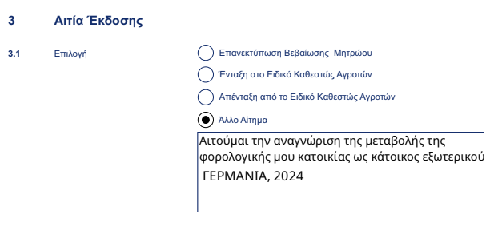 4. Χωρίς υπογραφή –> κάνε export (σελ. 1) και μετά ψηφιακή βεβαίωση εδώ |
| Δ210 – Δήλωση Μεταβολής Στοιχείων | Συμπληρώνεται από εσένα για αλλαγή διεύθυνσης/κατοικίας. Επομένως συμπληρώνεις τα σχετικά πεδία για το Β (σελ. 2 μεταβολή ατομικών στοιχείων). Μη ξεχάσεις τα στοιχεία του φορολογικού εκπροσόπου στο 6. Στοιχεία σχετιζόμενου ΑΦΜ. Χωρίς υπογραφή –> κάνε export (σελ. 1) και μετά ψηφιακή βεβαίωση εδώ |
| Υπεύθυνη Δήλωση Αποδοχής Εκπροσώπησης | Συμπληρώνεται από τον εκπρόσωπο. Αναφέρει ότι αποδέχεται τον ορισμό ως φορολογικός εκπρόσωπος. Κείμενο δήλωσης: Αποδέχομαι τον ορισμό μου ως φορολογικού εκπροσώπου στην Ελλάδα του [ΟΝΟΜΑ ΕΠΩΝΥΜΟ ΣΟΥ], με ΑΦΜ [ΑΦΜ σου], ΔΟΥ: [ΔΟΥ ΣΟΥ], ΑΔΤ [ΑΡΙΜΟΣ ΔΕΛΤΙΟΥ ΤΑΥΤΟΤΗΤΑΣ ΣΟΥ], που κατοικεί στην [ΠΟΛΗ ΕΞΩΤΕΡΙΚΟΥ ΠΟΥ ΜΕΝΕΙΣ] της [ΧΩΡΑΣ ΠΟΥ ΜΕΝΕΙΣ]" |
| Υπεύθυνη Δήλωση Ορισμού Εκπροσώπου | Συμπληρώνεται από εσένα. Κείμενο δήλωσης: "Ορίζω ως φορολογικό μου εκπρόσωπο στην Ελλάδα τον/την [ΟΝΟΜΑ ΕΠΩΝΥΜΟ] του [ΟΝΟΜΑ ΠΑΤΡΟΣ] με Α.Φ.Μ.: [ΑΦΜ ΕΚΠΡΟΣΩΠΟΥ] ∆.Ο.Υ.: [ΔΟΥ] κάτοικο: [ΠΟΛΗ] οδός - αριθμός: [ΟΔΟΣ ΑΡΙΘΜΟΣ]" |
Όταν έχεις έτοιμα όλα τα έγγραφα για την "Κάτοικοι Εξωτερικού – Αίτηση μεταβολής φορολογικής κατοικίας" δημιουργείς νέο αίτημα στην ΑΑΔΕ
Νεο αίτημα > Φορολογία > Για εμένα > Θεματική ομάδα: Εισόδημα,
Διαδικασία: Κάτοικοι εξωτερικού - διαδικασία μεταβολής φορολογικής κατοικίας,
Υπηρεσία Υποβολής Αιτήματος: ΔΟΥ που είσαι εγγεγραμμένος,
Τμήμα Υπηρεσίας Υποβολής: Έχει 1 μόνο entry. Οπότε αυτό.
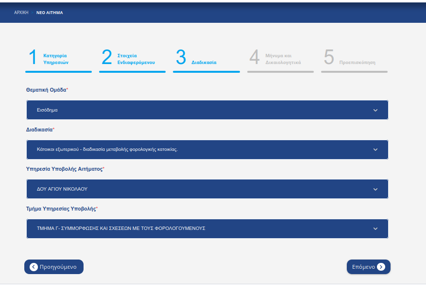
Αίτημα (Βήμα 4): Αιτούμαι την αναγνώριση της μεταβολής της φορολογικής μου κατοικίας ως κάτοικος εξωτερικού. Μέσω του "Επιλέξτε" κάνε upload όλα τα δικαιολογητικά σε PDF.
Σε επόμενο χρόνο θα σε ενημερώσουν για το τι δεν τους αρέσει και θα πρέπει να κάνεις τις διορθώσεις. Μπορείς να τσεκάρεις τα αιτήματά μου αν και κανονικά σκάει email όταν έχουν απαντήσει.
Κάτοικοι Εξωτερικού - κατάθεση δικαιολογητικών για μεταβολή φορολογικής κατοικίας
Η στρατηγική μου ήταν να ετοιμάσω πρώτα τα στάνταρ έντυπα, χωρίς να προτρέξω σε μεταφράσεις και apostille και μου φύγουν 500.000€ χωρίς να έχω πάρει το ΟΚ.
Γενικές σημειώσεις:
| Έγγραφο | Σημειώσεις |
|---|---|
| Μ0 |
ΘΕΜΑ: ΜΕΤΑΦΟΡΑ ΣΕ ΔΟΥ ΚΑΤΟΙΚΩΝ ΕΞΩΤΕΡΙΚΟΥ ΚΑΙ ΟΡΙΣΜΟΣ ΦΟΡΟΛΟΓΙΚΟΥ ΕΚΠΡΟΣΩΠΟΥ.
ΣΥΝΗΜΜΕΝΑ: Μ1, Μ7, τα παρακάτω πεδία τα άφησα κενά: 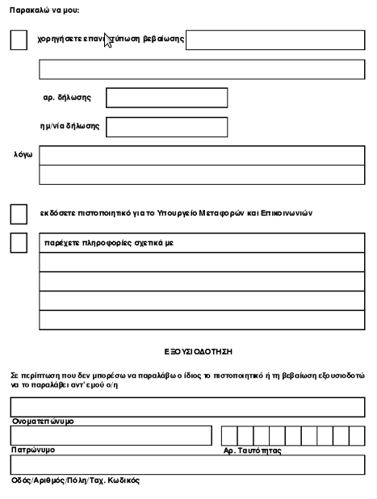 |
| Μ1 | Συμπλήρωσε μόνο τα πεδία α, γ (μόνο το επάγγελμα), και ε. |
| Μ7 | Έναρξη: Χ.
Είδος σχέσης: ΦΟΡΟΛΟΓΙΚΟΣ ΕΚΠΡΟΣΩΠΟΣ ΑΡΘΡ 8 ΚΦΔ / ΠΡΩΗΝ ΑΝΤΙΚΛΗΤΟΣ. Συνυποβάλλεται με δήλωση: Μεταβολής Ατ. Στοιχείων. |
| Πιστοποιητικό εργασίας | Π.χ. μισθοδοσία, βεβαίωση από εργοδότη. Σε πρώτη φάση έκανα ένα overlay translation του εγγράφου με OCR SW. Π.χ. Google Lens. Note: this may raise concerns for sensitive data/privacy but I could not find an OCR tool that performs overlay translation without relying on the Google Translate API... :'( Προχώρησα σε επίσημη μετάφραση μετά από επιβεβαίωση του υπαλλήλου της ΔΟΥ για την ορθότητα του εγγράφου. |
| Πρόσφατο έγγραφο από το δήμο που να πιστοποιείται η ημερομηνία εγγραφής/εγκατάστασης | Για Γερμανία ένα παράδειγμα είναι το Anmeldung. Overlay translation με OCR για αρχή και επίσημη μετάφραση μετά την επιβεβαίωση. |
| Πιστοποιητικό φορολογικής κατοικίας (ΠΦΚ) | hyperlink για Γερμανία Antrag auf Erteilung einer Ansässigkeitsbescheinigung deutsch-englische Sprachfassung Απαιτείται apostille και ΜΕΤΑ μετάφραση. Για apostille στην Δρέσδη: Landesdirektion Sachsen. Για αλλα Bundesländer --> no idea |
Όταν έχεις έτοιμο ένα αξιοπρεπή αριθμό από τα έγγραφα που απαιτούνται για την "Κάτοικοι Εξωτερικού – κατάθεση δικαιολογητικών για μεταβολή φορολογικής κατοικίας" δημιουργείς νέο αίτημα στην ΑΑΔΕ. UPDATE 250614:Νομίζω ότι πλέον μπορεί να γίνει στο ίδιο αίτημα με την αίτηση.
Στέλνεις ότι έχεις διαθέσιμο και γράφεις στο μήνυμα αιτήματος μια παράκληση για αξιολόγηση ως προς την ορθότητα. Παραθέτω ένα παράδειγμα:
Σε επόμενο χρόνο θα ενημερώσουν για την ορθότητα και θα μπορείς να προχωρήσεις σε μεταφράσεις, apostille και λοιπά. Μπορεί να στείλουν πληροφοριακό έντυπο με το τι ισχύει για την συγκεκριμένη ΔΟΥ. Είναι σημαντικό να το διαβάσεις γιατί η διαδικασία διαφέρει από ΔΟΥ σε ΔΟΥ. Καλό θα ήταν να μάθεις και αν η μετάφραση απαιτείται να γίνει μέσω "Ορκωτού Μεταφραστή". Αν ναι βρήκα έναν κατάλογο για Γερμανία. Για άλλες χώρες --> No idea.
Εργαλεία που ίσως φανούν χρήσιμα
| Εργαλείο | Χρήση |
|---|---|
| Xournal++ | Overlay text on PDFs, e.g. M0, M1, M7 |
| qpdf | PDF manipulation, Split / merge PDF files |
Fun Fact για κλείσιμο
Αρκετοί υπάλληλοι στις ΔΟΥ απαντούν μόνιμα με ΚΕΦΑΛΑΙΑ. Μετά από μερικές νύχτες υπερανάλυσης κατέληξα σε 3 πιθανούς λόγους:
How to: Set up VoIP GR virtual number abroad
Date: 2025-05-23
If you have been swearing non stop because the ridiculously high telephony service fees but only require a GR phone number then this is for you ... This method is intended for individuals living abroad who still need a GR number for receiving calls from GR - at reasonable rates -. Or just maintaining a GR number (for cheap) in order to accessing services such as TaxisNet or online banking requiring it.
The problem: AΠO ΣHMEPA IΣXYOYN EΠIΠΛEON XPEΩΣEIΣ ΛOΓΩ MONIMHΣ ΠEPIAΓΩΓHΣ ΓIA XPHΣH TOY ΠPOΓPAMMATOΣ ΣAΣ ENTOΣ EE... / aka they want to charge me extra as the number is only used roaming only for too long.
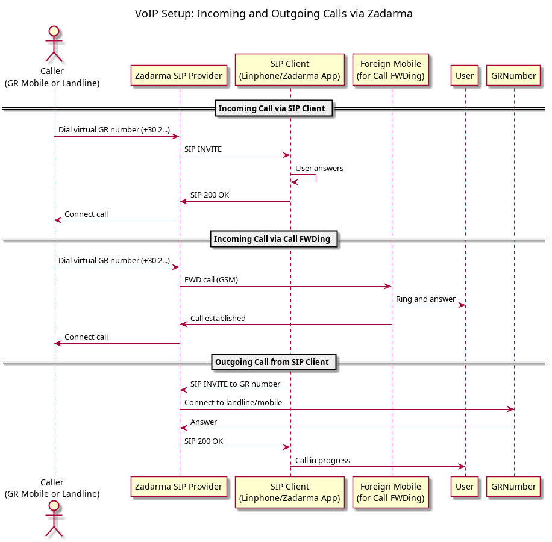
Hard requirements
Problem with GR Providers
After spending a few months abroad most GR providers send SMS warnings for additional charges to the normal tariff (i.e. budles). This becomes highly unreliable as I can not be sure as for when my account’s balance goes down to 0.00€. When this happens --> NO incoming/outgoing calls.
Personally I top up every two months. The minimum top up is 13€ which gives me a bundle (e.g. 1000 minutes, 1.5GB, 300 SMS for 12€). Nonetheless with roaming and extra fees usage becomes unpredictable ... and its too expensive for my taste.
I was recently researching VoIP technology and learned a few things on how TLS and SRTP work in VoIP. I searched for providers supporting GR numbers (+30) and found quite a few. Zadarma met the above hard requirements best.
Provider Comparison
| Feature | GR Provider | Zadarma |
|---|---|---|
| Outgoing Calls | Bundle + 0.024€/min | 0.034€/min (mobile), 0.019€/min (landline) |
| Incoming Calls | Bundle + 0.024€/min | Free (via SIP client) / With call forwarding: same as outgoing |
| Number Charge | Free | 3€/month |
| Number Type | +30 69... (mobile) | +30 2... (landline) |
| Yearly Cost (100 min/month) | 78.00€ | 64.97€ |
Setup Instructions
Requirements
How to:
Conclusion
| Advantages | Disadvantages |
|---|---|
| Free incoming calls via SIP | Incoming calls received via FWDing/GSM are not free (standard Zadarma rates) |
| Cheaper than GR mobile providers by approx. 16% (yearly charges) | Only landline numbers are available (+30 2...) |
| GR callers calling your GR number pay local rates | Cost may exceed standard GR provider plans depending on usage |
| Predictable cost | No mobile data therefore it may not applicable if you need that. Personally, I do not care. |
Video8 Composite Signal Capture and Decoding Using CX2388x-Based PCIe Card
Date: 2024-04-05
Probably no one cares, as the vhs-decode wiki is already so well documented ;) ... but I decided to write this down anyway. Mainly for future personal reference and partly to share an actual practical approach. Maybe also to showcase/provide an update of what I’ve been busy with over the last few months to my blog readers.
Why
So to start with, I had a bunch of old Video8 tapes sitting around. The majority of them being footage of me as a kid, a few other from my teenage years and some punk gigs in Thessaloniki. I did not want to invest hundreds of euro on the process so I focused on capturing/decoding them on a budget. 10 years ago a dodgy lad in Bit-Bazaar in Thessaloniki, GR told me that using actual task-specific-hardware to turn video8 tapes digital is "better". He had a Video8-DVD Combo Recorder. Nonetheless, this costs a lot of money, is rare, and to be honest it also abstracts away the whole signal chain. I do not really get to see what is happening under the hood. I wanted something a bit more hands on that would let me understand what is actually coming off the tape and how it gets turned into a digital file. After some investigation I discovered vhs-decode. Pretty cool stuff. Super-duper well documented.
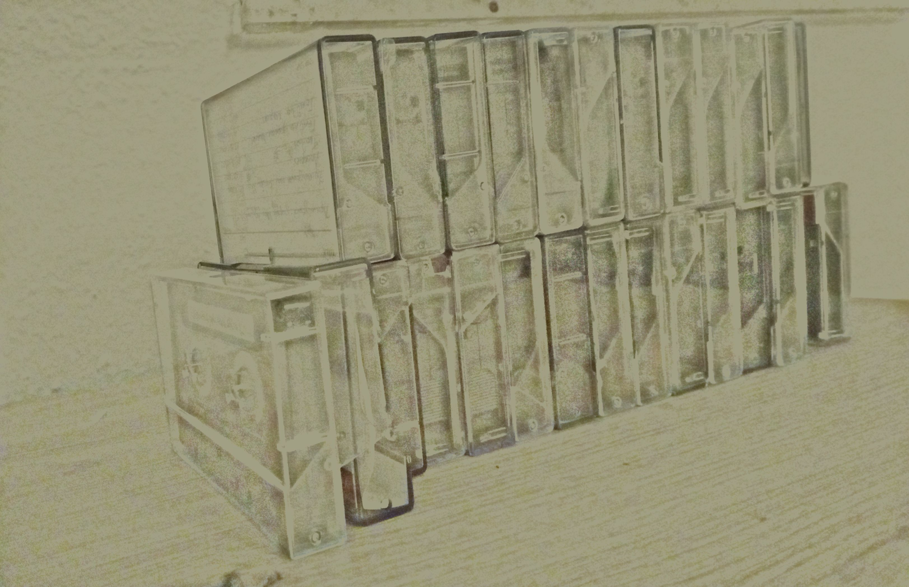
Equipment
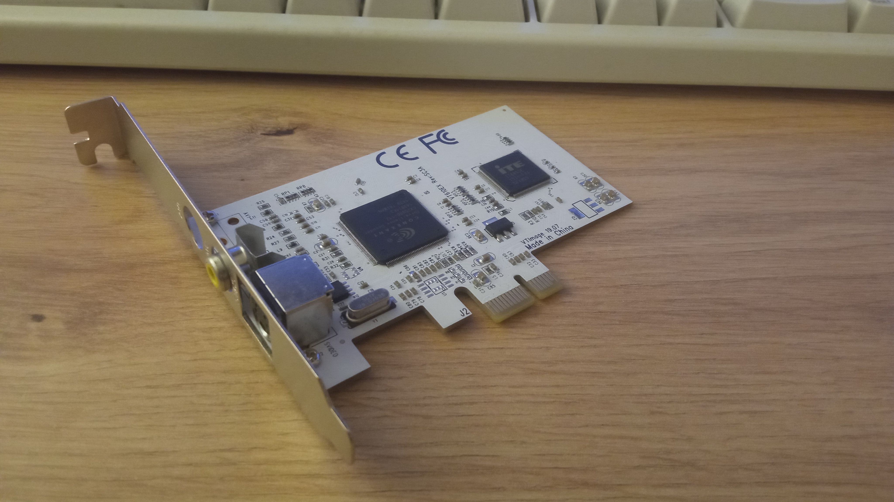 |
CX ADC PCIe Capture Card
Basic white variant card with CX2388x chip. Used with `cxadc` Linux driver. No mods applied yet during capture, but I experience frame dropping when it works a bit too hard (due to thermal throttling I would guess).
|
|
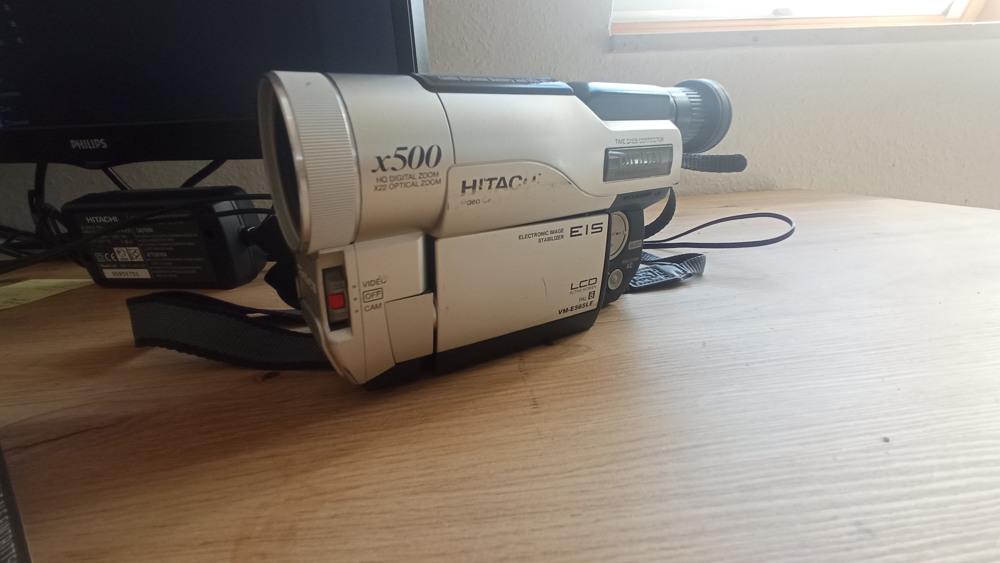 |
Hitachi VM-E565LE (PAL8 Camcorder)
Used as playback for decoding Video8. Native PAL output with mono RCA audio. According to the docs using the original camcorder helps improves quality (it is the original in this case).
|
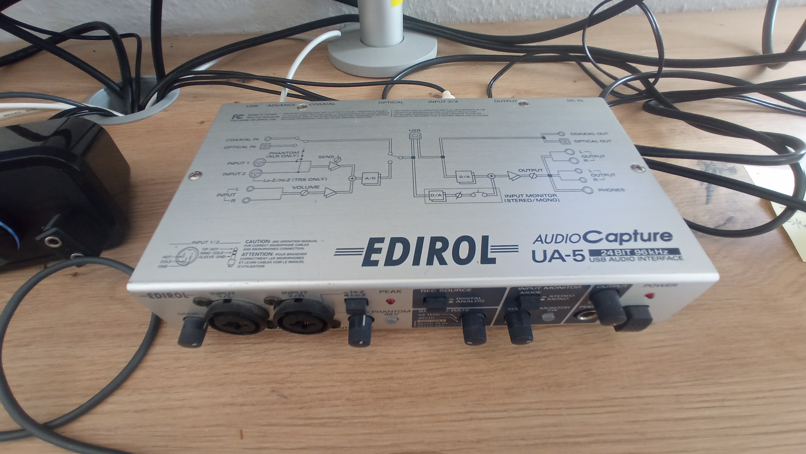 |
EDIROL UA-5 Audio Interface
24-bit/96kHz USB interface. Audio was recorded in 16bit/48kHz using Audacity. Runs with ALSA usb audio class drivers directly (snd_usb_audio module).
|
The camcorder I used for playback was a Hitachi VM-E565LE, a PAL Video8 model with an onboard LCD screen. Based on the the official documentation using the original camera or the exact model that recorded the tape is always preferred. It is better optimised for playback especially when the tapes are old or worn which is always pretty much the case nowadays. The Hitachi camera outputs standard CVBS video through RCA and mono audio via another RCA. CVBS is a single channel signal that combines a few elements of a video stream into a waveform. It includes Luma (Y) which is the brightness or black-and-white portion of the image. Chroma (C) which is the color information. This is modulated onto a subcarrier (4.43 MHz for PAL). It also has some horizontal and vertical sync pulses used for timing as well as blanking intervals. The chroma is modulated onto a lower frequency and then summed with the luma and sync signals.

Initially I thought the audio was HiFi FM and tried capturing it with the CX Card and decoding it (LOL). However, after looking at the manual and reading monophonic audio (not that "mono" provides any useful information itself) something clicked and I tried to just stick the output into the audio interface and to monitor the input signal. This way I realised my camera outputs linear mono audio not HiFi FM. So I simply captured the audio using the audio interface.

My audio interface is the EDIROL UA-5. It can record 24bit/96kHz. I bought it for 30 euro used from Kleinanzeigen. Excellent build quality, it has standard compatibility with ALSA usb audio class drivers therefore it is plug-n-play. I recorded the audio in Audacity at 16bit/48kHz mono. Honestly, not sure what a modern > 100 euro Focusrite/Behringer/whateva would offer over this. It has even a cool top panel block diagram of the signal path hehe ;D
Video Capture: The CX Card
The CX capture card is the white-label PCIe to AV expansion board. Model: 23880/23881, Conexant CX25800-11Z is the chip if that plays any role. Functionality should be the same for all different chips used says the seller. I bought it for 25 Euro approximately. It uses the CX2388X (does not say X on the PCB) chipset. The chipset is supported by the cxadc driver. Currently I am using it without modifications. I am planning to add the cooling mod soon. I suspect some dropped frames are due to overheating. Potentially the default crystal oscillator might also cause this. Nonetheless the docs state it really clearly: "Faster sampling data output = more heat = shorter hardware life and possible loss of capture data due to overheating."
The cooling mod involves using a 40x40mm passive heatsink and a fan. I will be doing this soon.
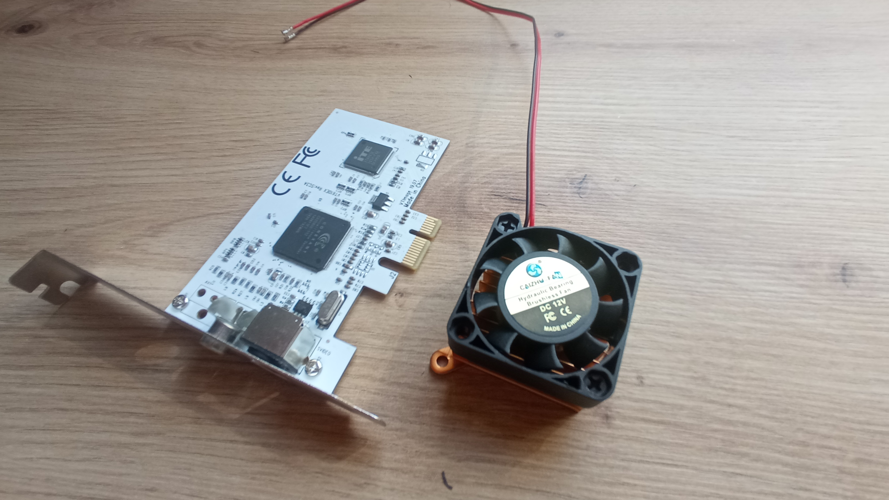 |
Cooling Mod (Heatsink)
Passive heatsink with fan to be added in order to reduce thermal throttling and minimise frame drops. This is the recommended mod for CX cards.
|
As for the crystal mod the stock 28.636MHz crystal can be replaced with a 40MHz ABRACON oscillator according to the docs. This improves the sampling rate and SNR up to 40Msps on 8-bit capture. Stability may also improve. Might attempt this later.
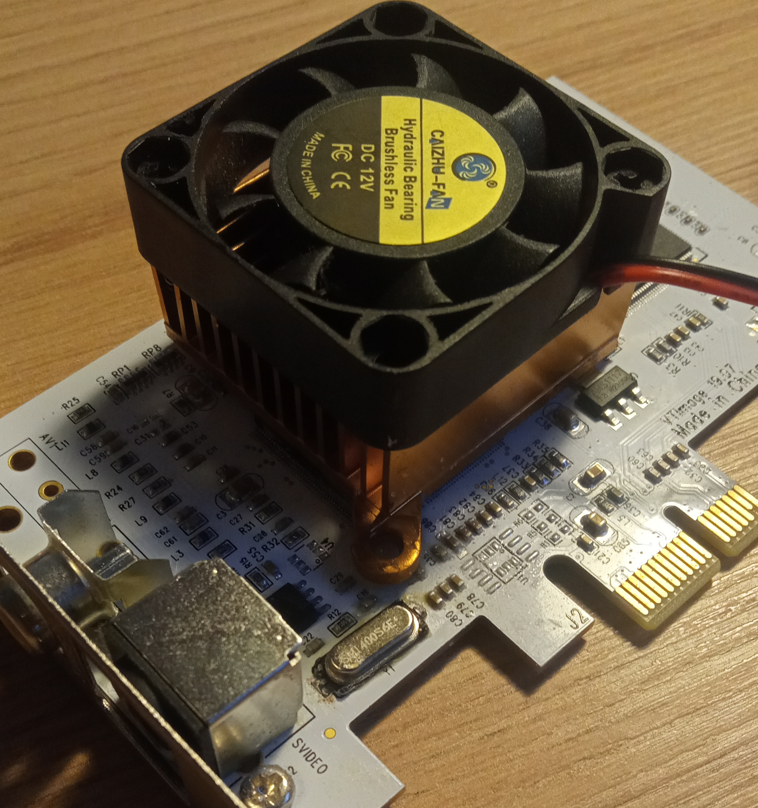 |
250612 Update
Crystal, C31 (Capacitor), Cooling (Heatsink + Fan) mod applied. Now I can sample at 40 MHz / 8 bit and ensure for less dropped frames as well as improved SNR.
|
Workflow overview
I created this workflow diagram to visualise the complete Video8 signal capture and decoding path using the CX ADC card. It showcases the process from HW setup and Composite capture to decoding and audio video synchronisation.
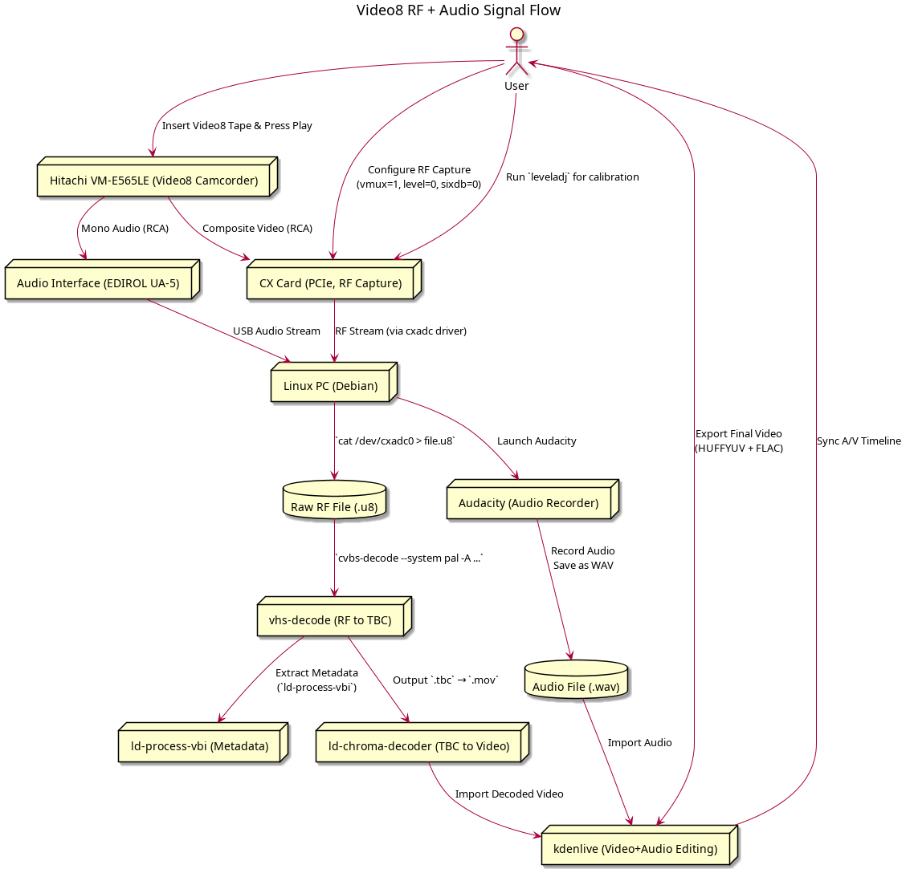
-
Set capture parameters
Make sure digital gain is off and level is at 0:
sudo zsh -c 'echo 1 > /sys/class/cxadc/cxadc0/device/parameters/vmux'sudo zsh -c 'echo 0 > /sys/class/cxadc/cxadc0/device/parameters/level'sudo zsh -c 'echo 0 > /sys/class/cxadc/cxadc0/device/parameters/sixdb'ls /dev | grep cxadc | sed -e's/dev//g' | xargs -I % bash -c 'find /sys/class/cxadc/%/device/parameters | grep -v parameters$' | xargs -I % bash -c 'echo -n "% " && cat %'Start the camcorder playback
Then immediately run the level adjustment:
~/local/bin/leveladjRecord
Raw capture:
cat /dev/cxadc0 | pv > CX_Card_28msps_8-bit.u8cat /dev/cxadc0 | flac --fast -16 --sample-rate=28636 --sign=unsigned --channels=1 --endian=little --bps=8 --blocksize=65535 --lax -f - -o capture.flac.u8 and compress later.
Decode
Once recording is done, decode with:
cvbs-decode --debug --threads 8 --system pal -A --cxadc capture.u8 capture_output.tbc file.
VBI Processing
ld-process-vbi capture_output.tbcVideo Export
ld-chroma-decoder --decoder transform3d -p y4m -q capture_output.tbc capture_output.movSync Audio
In a video editor (e.g., Kdenlive) align the first visible frame with the first audible signal. Use tape cuts or loud audio transients to help with synchronisation. On one tape in my collection I smack hard an anvil (I hope that is the correct word in English/I mean "αμόνι" in Greek) as a 3-year-old with a hammer. That was perfect for syncing. My export settings:
Video codec: HuffYUV (lossless)
Audio codec: FLAC
Problems I Faced
Dropped Frames: On some captures the video capture stops unfinished. This happens when the FLAC frame fails to decode. Root cause could be either heat or unstable sampling clock. Raw capture can reduce risk and allows for (simpler) capture resuming.
250430 Update: I do not have problems with dropped frames anymore after applying the heatsink mod. While I was on it I also removed the Capacitor 31 from the PCB for improving SNR.
Audio Confusion: Initially expected HiFi FM, but found my camcorder produces output of an standard analog mono signal (LOL once again)
Partial Decoding: Using --start flag in cvbs-decode or ld-chroma-decoder sometimes fails silently if the frame count is not aligned. Make sure you are using valid frame counts. ld-analyse file.tbc can be of great help ;)
Syncing: Syncing manually works fine but needs some attention. Small errors can lead to drift. It would be cool if it could be somehow automated. Clockgen mod keeps tapping me on the shoulder but I know the moment I say "hi back!" I know I will be spending my afternoons during the following month on it :|
Epilogue
Not much to say to be honest. I am only so happy I had the chance to watch all this family footage and create a small archive of punk rock gigs in Thessaloniki (see Video 1 & Video 2). Finally, massive thanks to Harry Munday the guy who not only most of all of this but also designed half the hardware and somehow still has time to keep optimising and helping people. Legend.
Θεσσαλονίκη 2013 - 2016
Date/Ημερομηνία: 2024-03-08
Θυμάμαι εκείνο το live στους ANEF που διάλυσα τον αστράγαλό μου (βλ. 08:25) και ταλαιπωρήθηκα για χρόνια :( Όπως και την ενέργεια τον θυμό (και το άγχος βσκ) στην συναυλία της τάξης (βλ. --> παρακάτω).
Κανείς από εμάς δεν φαινόταν να νοιάζεται για τίποτα τότε xD
Αναρωτιέμαι τι να ήταν αυτό που μας ένωνε εκείνον τον καιρό βέβαια. Ίσως η οικονομική κρίση που μας έκανε όλους ίσους, η οργή μας απέναντι σε ένα σύστημα που μας καταπίεζε, η ανάγκη μας να ξεφύγουμε από τα στερεότυπα της κοινωνίας - της θρησκείας - του σχολείου;
Δεν ξέρω. Ξέρω μόνο ότι ήμασταν ενωμένοι. Χωρίς να περιμένουμε τίποτα και χωρίς να έχουμε τίποτα να χάσουμε.
Στην συναυλία οι γονείς ήταν σε σοκ! Να παρακολουθούν τα παιδιά τους να ουρλιάζουν στίχους για την άρρωστη σύγχρονη αστική κοινωνία και τα θύματα της πρέζας. Στίχοι σαν αυτούς που είχαν γραφτεί τότε:
"Σε μια κοινωνία προβάτων τυφλών
Σε μια κοινωνία ανθρώπων καπιταλιστών
Τα media σε τάισαν φόβο και σκατά
κι όλη μέρα δούλευες για άλλου τα λεφτά
Μεταμοντέρνα αστική αρρώστια
Μεταδοτική κοινωνική αρρώστια " (M.Ν.)
"Πρέζα, αρρώστια, δεν φταίει το παιδί
Μόνος του ήτανε, δεν είχε επιλογή
Κανένας δεν νοιαζότανε πού ήταν και πού πάει
Μόνος πάλευε για ακόμα μια ζάλη ... ÄÄÄ!" (K.Β.)
Αυτές είναι οι στιγμές που δεν θα ξεχάσω ποτέ αλλά και που δεν θα ξαναζήσω :'( Θα συνεχίσω να τις κάνω show-off σε άκυρους που γνωρίζω κ' θα νοσταλγώ και θα εύχομαι να μην είχε περάσει ούτε ένα λεπτό από τοτε. Βσκ πως μένω για πάντα 16;
Καμιά φορά πετυχαίνω παλιούς γνωστούς, φίλους, έρωτες. Είμαστε πλέον συγκρατημένοι, απόμακροι. Σαν να μας κρατάει κάτι πίσω και σαν να φοβόμαστε να αφεθούμε. Λες και δεν ζήσαμε μαζί ξέρω γω.
Φίλε.. μέσα μου θα θυμάμαι πάντα την εποχή εκείνη. Όταν η Θεσσαλονίκη ήταν μια πόλη που έβραζε. Μια εποχή που το πάνκ ήταν η φωνή μας. Μια φωνή που δεν φοβήθηκε να ουρλιάξει ;)
Dresden in Fog and Rain
Date: 2024-11-13
Starting with a bit of history. Those who knew me before 2019 might remember me experimenting with cheap, manual Russian analog cameras from the late '60s and early '70s. One of my favorite shots both for its result and technical complexity is the one below. Really bad lossy digital compression I know. I could update it when I find the original print ... For now, enjoy as much as this heavily compressed copy allows.
This was taken while I was hanging out along the Thessaloniki coast crossing the bridge over Nikis Avenue near the Macedonian Palace Hotel. At the time I wanted to experiment with longer shutter speeds but had not managed to do so. I was carrying a shoulder bag with my equipment. Two Helios lenses, filter lens, and more. I found a stable position for the camera literally on the ground and connected the Cable Release / Shutter Remote. During a 10 second exposure I used three coloured transparent overlay filter sheets (yellow, red, and blue) swapping each filter every three seconds to capture varied colours in the car headlights. I left the last second without a filter to add a natural headlight colour. The camera used was a Zenit E with a Helios 44M-4 58mm lens, f/16 aperture, and a 10 second exposure.
Its been years since I have given up taking pictures as it was way too expensive for a student budget and I was too busy studying and moving to a new country every 6 months. Nonetheless, 2 days ago Dresden was enveloped in inreased fog and rain. This is a combination I am particularly fond of. I looked out my window as night fell and saw the headlights. It reminded me of the time being a BSc student experimenting with my camera along Thessaloniki costal lane.
I used my not-so-fancy and not-so-vintage Xiaomi Redmi 8. I switched to manual mode, increased the ISO since it was nearly dark, opened up the aperture to allow increased field depth, and set the shutter speed to a maximum of 13 seconds. Here is what I got:
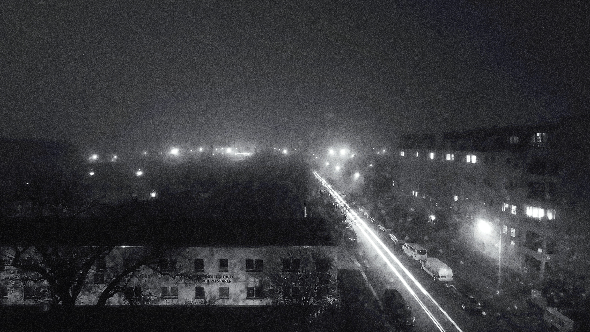
NEIPA Hack
Date: 2024-10-28
I thought I’d start my first blog post with something casual... how about a beer recipe?
A few years ago, I composed this recipe specifically for my birthday party. There would be a lot of people, so what’s better than a bit less than 23 lt. of hacky-hoppy New England IPA?
In a few words...
To start by clarifying, I don’t have any equipment for all-grain brewing, so most of the time, I am limited to beer kits. However, I kind of missed that fresh hops taste from the last time we brewed with my pal John using his all-grain equipment, and in general, I was looking for anything extra-hoppy really...
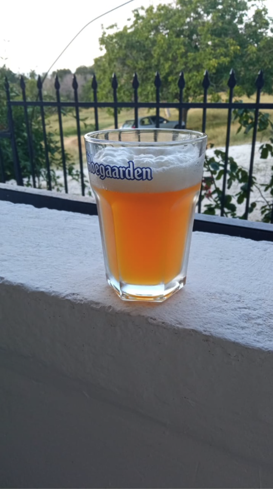
A pint of NEIPA Hack brew.
While not having the means to brew a proper NEIPA, I figured out a hacky way to brew something close to it in appearance and flavor. My fermentation bucket has a 23lt batch size, and the largest cooking pot my mom has can fit approximately 5lt. I was spending that summer with my parents. Usually, the kits I used to brew produce some kind of “sterile” beer flavor, kind of flat. Even IPA kits don’t taste as fresh as the batches we used to make from scratch with my friend John. We used to mash using Brew In A Bag (BIAB) all-grain technique with his equipment. Without all-grain equipment, my idea was to brew a total of a 23lt batch, with 5lt BIAB’ed in my mom’s pot and then mixed into the kit’s 18lt.
Mashing
During the mash process, I used 1 kg of Malt Pale Ale (Weyermann) grains and 0.5 kg of Flaked Oats to obtain the typical hazy colour. I raised the water temperature to 73 Celsius, expecting that when the oats and grains were added, the temperature would drop to around 67 Celsius, ideal for the mash to allow conversion of complex sugars in the grains into simple ones that yeast can feed on. I quickly removed it from the stove, put the lid on, and wrapped the pot with 5-6 towels to prevent heat from escaping. I left it sitting for exactly an hour. After an hour, I filtered out the grains from the wort using a standard kitchen strainer and boiled for 15 minutes. During the last 2-3 minutes I used 80 grams of Cascade hops and whirlpooled it. I had calculated 18 IBU for the bitterness level. While boiling, I prepared the kit concentrate in the fementation bucket. When the 15 minutes of boiling were completed, I used the 100 Celsius wort to dissolve the kit concentrate in the fermentation bucket (HDPE food-grade plastic), as well as approximately 3/4 of the dextrose suggested by the kit, considering the additional sugars from the mashing. Then, I used cold water to bring the temperature down while filling all the way up to hit 23lt.
Temperature control during fermentation
That summer I spent at my parents’ house. It was extremely hot throughout GR and going out was impossible. So I thought I’d spend time brewing my birthday beer. The main issue with the heat was fermentation temperature. For an IPA, I wouldn’t risk it going above 21-22°C, especially a heavily hoppy one. My dad has bees and used a metallic stainless steel tank as a honey extractor years ago. I took it and filled it halfway with ice-cold water. Then I placed it in the basement, which is naturally cooler than the ground floor. I submerged the fermentation bucket in the ice-water-filled tank and covered the top of the fermentation bucket with water-soaked towels. Below there is a picture of myself cleaning the metallic tank to use it for the first time. The first time I used the tank this way was to cool down the fermentation temperature of a Weizen beer to 17°C, to encourage “clove” flavors rather than “banana.” Initially, I considered using it as an all-grain container but never moved forward with this plan.

Metallic tank as a cooling method in the fermentation.
Fermentation
At this point, I had the metallic tank and mixture ready at 19°C. I sprinkled 11.5 gr of generic Fermentis SafAle US-05 (optimal temperature 20-25°C) and closed the bucket top, wrapping the fermentation bucket with wet towels. I took one sample and measured the Original Gravity (OG) at 1.051. Exactly as I had calculated! The fermentation was insanely fast, hitting a specific gravity (SG) of 1.014 in 4 days. During active fermentation, on day 5 I opened the lid and added the dry hops. By day 7, the Final Gravity (FG) reached 1.011. I left it for an additional 4 days to ensure fermentation was complete. 11 days total. On day 11, I manually bottled 23lt, adding some additional dextrose (160 gr) to increase the carbonation level aiming at producing a two-finger white head.
Dry hopping
Some words about the dry hopping. To wrap up other than the metallic tank DIY stuff above I did not do anything fancy throughout the fermentation and dry hopping. In the journey of hop experimentation and while I would not be able to distinguish one hop variety from another when sampling NEIPAS or heavy-hopped TIPAs or DIPAs I decided for the dry hopping to be of a single variety (almost). I don´t know if that can be considered NEIPA in the end but yea. Nevertheless, I used 30 gr simcoe for dry hopping with some remains (approximately 20 gr) of cascade from the whirlpool. Cascade was cheap, simcoe was expensive and I remeber it killed my wallet as of the time being on very tight student budget and living in GR where for some reason shipping prices are outrageous. Therefore I guess it kindda makes sense why I didn´t want to whirlpool the good/expensive stuff. Poor man´s NEIPA it is then!. Below you can see the expected flavour pallete created by the combination of the hops, unfortuantely it is in GR, but overall simcoe was expected to provide some floral, citrus, and berry notes while cascade was adding some mint while enhancing the citrus and berry notes. Keep in mind that simcoe is the dominant here as it was used in higher quantity. I did not take any precations to mitigate oxidisation other than manifesting for it, I guess I was lucky not to end up with amber coloured oxidised beer. Well, that´s all about it really.
Some words about the dry hopping. Aside from the DIY metallic tank setup, I didn’t do anything fancy during fermentation and dry hopping. In experimenting with hops and while I wouldn’t distinguish one hop variety from another when sampling NEIPAs or heavily hopped TIPAs or DIPAs, I decided on a single variety (mostly) for the dry hopping. I don’t know if that can be considered NEIPA, but well... Regardless I used 30 gr Simcoe for dry hopping with some remnants (about 20 gr) of Cascade from the whirlpool. Cascade was cheap, Simcoe was expensive, and I remember it strained my wallet as I was on a tight student budget in GR where shipping prices are -for some reason- high. So I guess that’s why I didn’t want to whirlpool the expensive stuff making it a poor man’s NEIPA I guess! Below, you can see the expected flavor palette created by the combination of hops. Simcoe was expected to provide floral, citrus, and berry notes, while Cascade added some mint, enhancing the citrus and berry notes. Simcoe was dominant here as it was used in higher quantity. I took no specific precautions to prevent oxidation other than manifesting it. Luckily it didn’t end up as amber-coloured, oxidised beer. That’s about it, really.
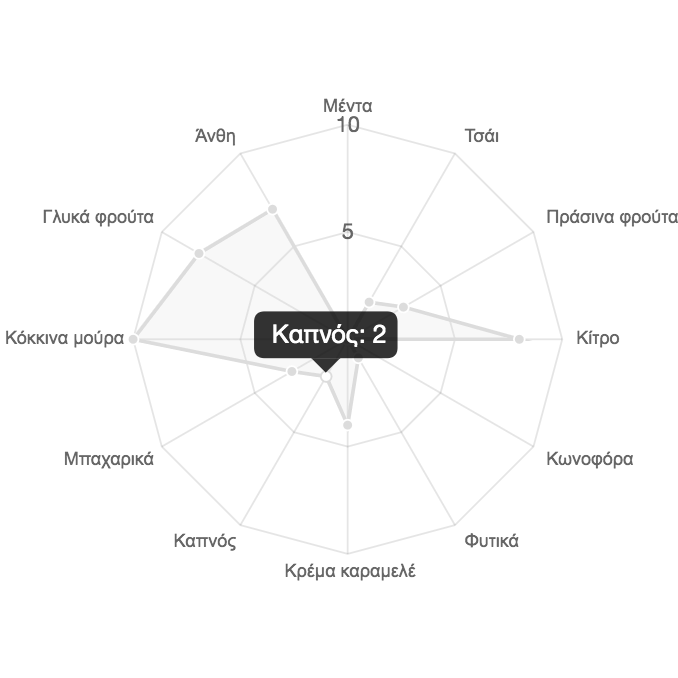
Simcoe: expected dry hopping flavour pallete.
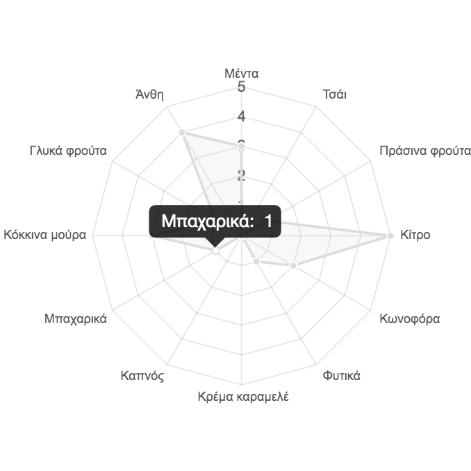
Cascade: expected dry hopping flavour pallete.
An important note here is that I took a lot of precautionary measures using Chemipro OXI disinfectant solution throughout fermentation, dry hopping, and transferring from one container to another. I systematically disinfected the fermentation bucket, the metallic tank for the "Bain-marie," the tubes, and finally the bottles to prevent any yeast infections.
The important bit... sampling!
At the birthday party, everyone loved the beer. People knew it was homebrewed and were surprised by the extra fresh kick it had. John my pal I used to brew with, described it as "the beginning of a new era in our collaborative homebrewing". It’s sad that we both left GR a few months later and haven’t brewed since. Hopefully, we’ll get back to it! I still remember his excitement and feedback from when we first tried it.
To wrap up, I can confidently say that it was pretty close to a standard session NEIPA, given the lower expected ABV of 4.4%. Fresh, very strong citrus aroma and kick, mild bitterness on the finish / back end, refreshing, good levels of carbonation, and generally rich in its palette, maybe a bit “aggressive.” Unfortunately, by the second week, it started to flatten and became more bitter as the hops particles settled in the bottles. By the 4th week, it had a strong hops aftertaste and was more bitter, but it was still drinkable. Cheers!